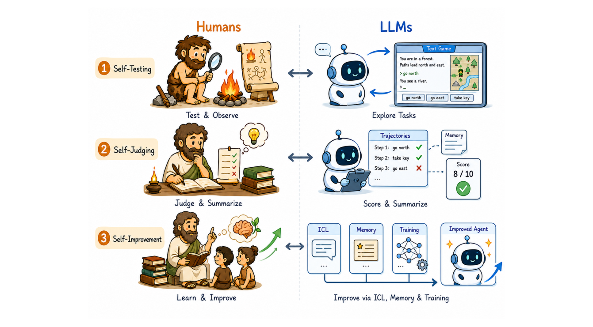
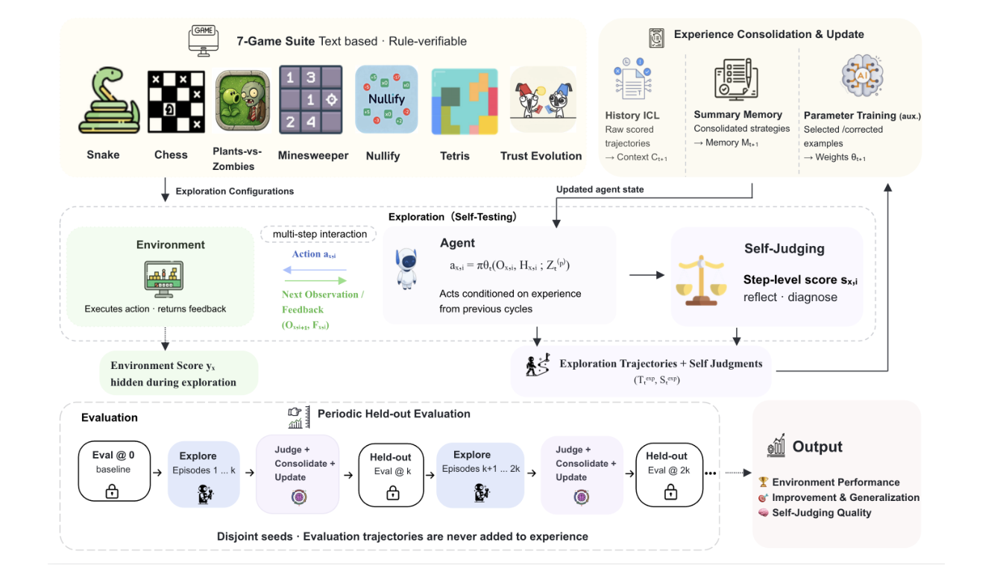
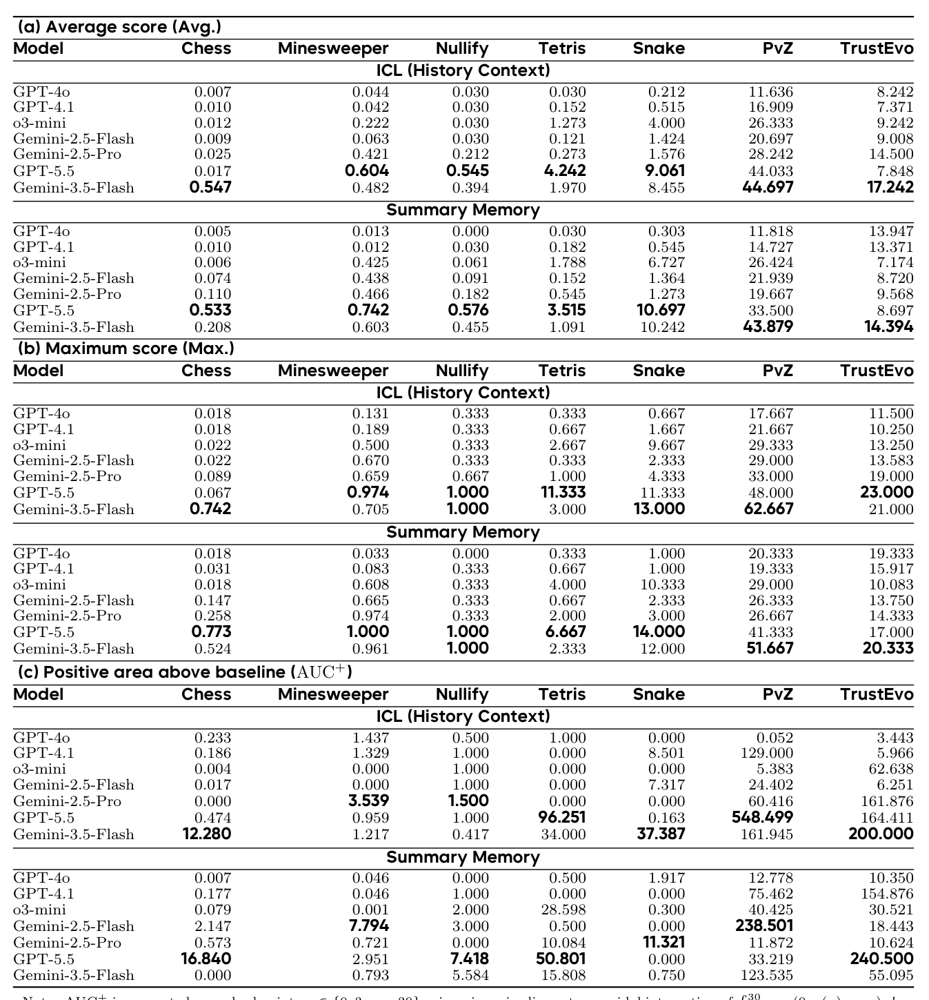
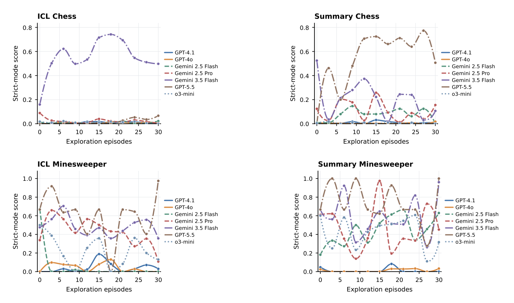
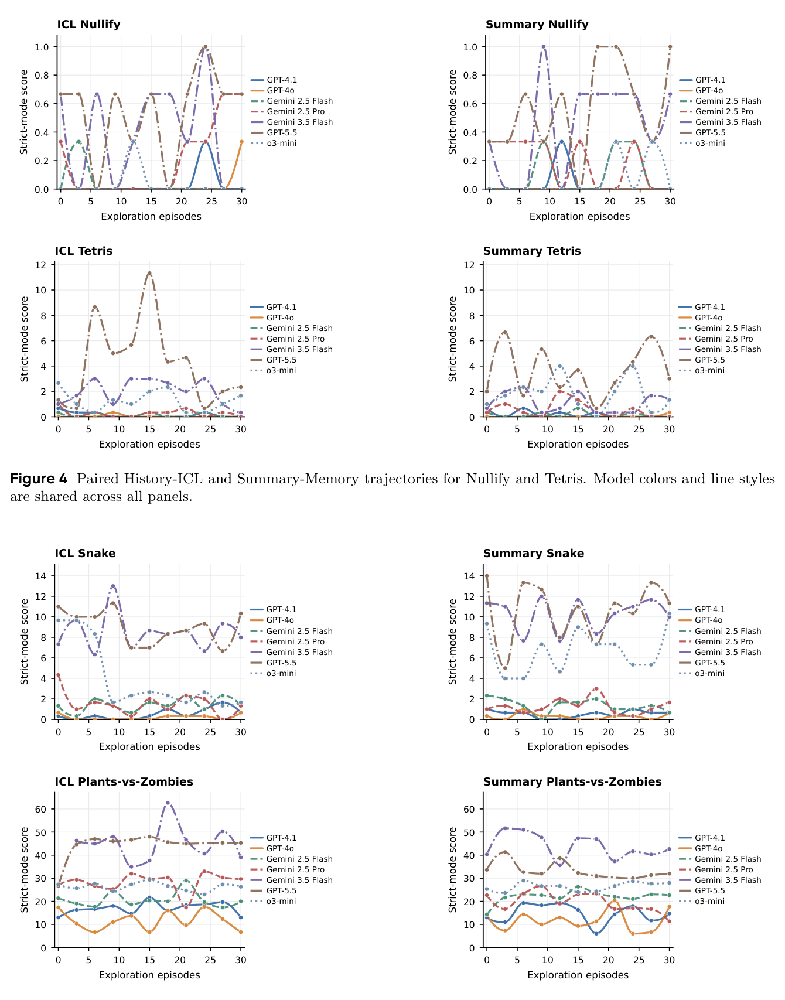
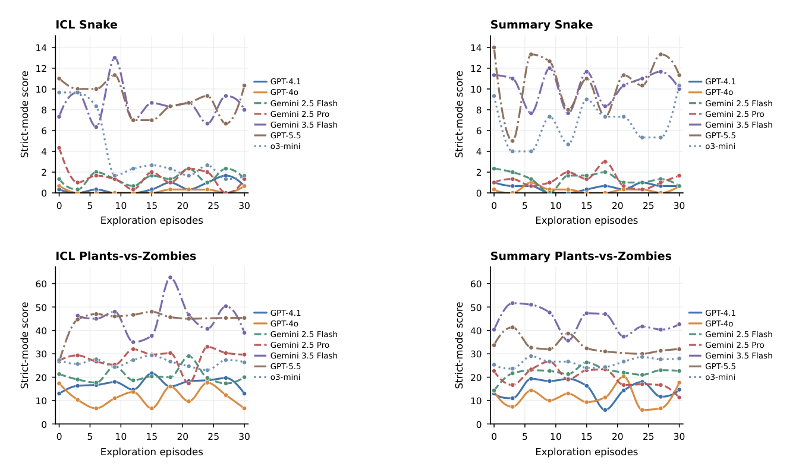
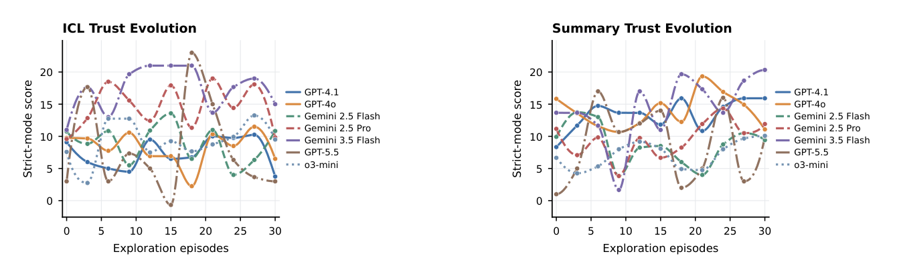
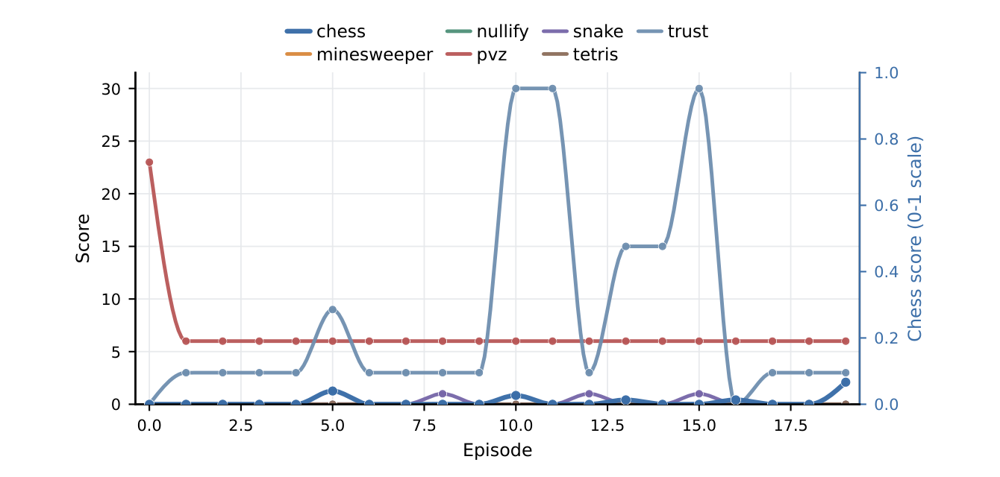
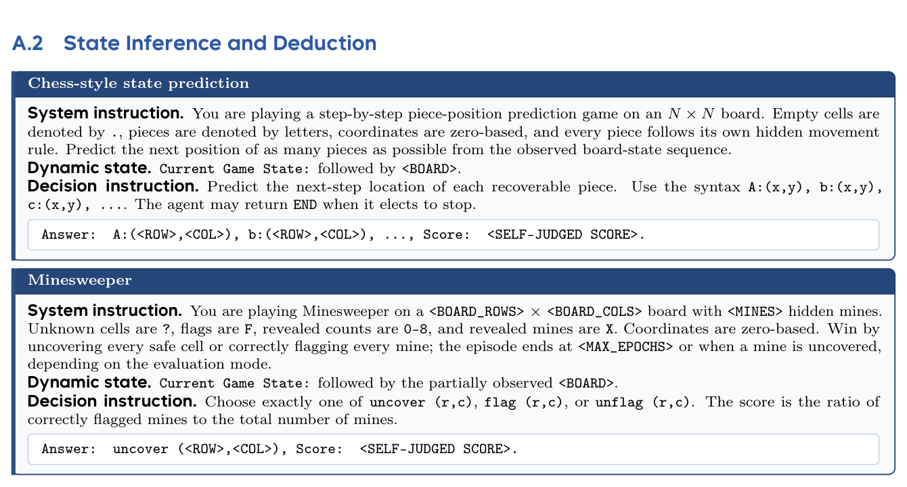

S3Gym: Can LLMs Turn Self-Testing and Self-Judging into Self-Improvement?
S³Gym：自测自判能否转化为自我改进
7 个文字游戏中无奖励信号地探索-自评-改进；自判准确与后续提升并不同步。
翻译范围：正文全部段落走三步精翻（直译→反思→雅化）；脚注与参考文献不译；公式、数字、模型名、数据集名、引用标记按原文 Unicode 保真；表格还原为可复制文本。
Table 1
| Benchmark | Updated System | Self-Testing Self-Judging Experience Use | Evaluation | |
|---|---|---|---|---|
| P tT i B | h | M d l | P t t i i | H ld t t k |
Table 4表 4 报告所有完整模型在 History ICL 与 Summary Memory 两种路径下的 Avg.、Max. 与 AUC+。加粗数值表示对应路径与游戏内各指标的最佳结果。
| (a) Average score | (Avg.) | ||||||||
|---|---|---|---|---|---|---|---|---|---|
| Model | Chess | Minesweeper | Nullify | Tetris | Snake | PvZ | TrustEvo | ||
| ICL (History | Context) | ||||||||
| GPT-4o | 0.007 | 0.044 | 0.030 | 0.030 | 0.212 | 11.636 | 8.242 | ||
| GPT-4.1 | 0.010 | 0.042 | 0.030 | 0.152 | 0.515 | 16.909 | 7.371 | ||
| o3-mini | 0.012 | 0.222 | 0.030 | 1.273 | 4.000 | 26.333 | 9.242 | ||
| Gemini-2.5-Flash | 0.009 | 0.063 | 0.030 | 0.121 | 1.424 | 20.697 | 9.008 | ||
| Gemini-2.5-Pro | 0.025 | 0.421 | 0.212 | 0.273 | 1.576 | 28.242 | 14.500 | ||
| GPT-5.5 | 0.017 | 0.604 | 0.545 | 4.242 | 9.061 | 44.033 | 7.848 | ||
| Gemini-3.5-Flash | 0.547 | 0.482 | 0.394 | 1.970 | 8.455 | 44.697 | 17.242 | ||
| Summary | Memory | ||||||||
| GPT-4o | 0.005 | 0.013 | 0.000 | 0.030 | 0.303 | 11.818 | 13.947 | ||
| GPT-4.1 | 0.010 | 0.012 | 0.030 | 0.182 | 0.545 | 14.727 | 13.371 | ||
| o3-mini | 0.006 | 0.425 | 0.061 | 1.788 | 6.727 | 26.424 | 7.174 | ||
| Gemini-2.5-Flash | 0.074 | 0.438 | 0.091 | 0.152 | 1.364 | 21.939 | 8.720 | ||
| Gemini-2.5-Pro | 0.110 | 0.466 | 0.182 | 0.545 | 1.273 | 19.667 | 9.568 | ||
| GPT-5.5 | 0.533 | 0.742 | 0.576 | 3.515 | 10.697 | 33.500 | 8.697 | ||
| Gemini-3.5-Flash | 0.208 | 0.603 | 0.455 | 1.091 | 10.242 | 43.879 | 14.394 | ||
| (b) Maximum score | (Max.) | ||||||||
| Model | Chess | Minesweeper | Nullify | Tetris | Snake | PvZ | TrustEvo | ||
| ICL (History | Context) | ||||||||
| GPT-4o | 0.018 | 0.131 | 0.333 | 0.333 | 0.667 | 17.667 | 11.500 | ||
| GPT-4.1 | 0.018 | 0.189 | 0.333 | 0.667 | 1.667 | 21.667 | 10.250 | ||
| o3-mini | 0.022 | 0.500 | 0.333 | 2.667 | 9.667 | 29.333 | 13.250 | ||
| Gemini-2.5-Flash | 0.022 | 0.670 | 0.333 | 0.333 | 2.333 | 29.000 | 13.583 | ||
| Gemini-2.5-Pro | 0.089 | 0.659 | 0.667 | 1.000 | 4.333 | 33.000 | 19.000 | ||
| GPT-5.5 | 0.067 | 0.974 | 1.000 | 11.333 | 11.333 | 48.000 | 23.000 | ||
| Gemini-3.5-Flash | 0.742 | 0.705 | 1.000 | 3.000 | 13.000 | 62.667 | 21.000 | ||
| Summary | Memory | ||||||||
| GPT-4o | 0.018 | 0.033 | 0.000 | 0.333 | 1.000 | 20.333 | 19.333 | ||
| GPT-4.1 | 0.031 | 0.083 | 0.333 | 0.667 | 1.000 | 19.333 | 15.917 | ||
| o3-mini | 0.018 | 0.608 | 0.333 | 4.000 | 10.333 | 29.000 | 10.083 | ||
| Gemini-2.5-Flash | 0.147 | 0.665 | 0.333 | 0.667 | 2.333 | 26.333 | 13.750 | ||
| Gemini-2.5-Pro | 0.258 | 0.974 | 0.333 | 2.000 | 3.000 | 26.667 | 14.333 | ||
| GPT-5.5 | 0.773 | 1.000 | 1.000 | 6.667 | 14.000 | 41.333 | 17.000 | ||
| Gemini-3.5-Flash | 0.524 | 0.961 | 1.000 | 2.333 | 12.000 | 51.667 | 20.333 | ||
| (c) Positive area | above | baseline | (AUC+) | ||||||
| Model | Chess | Minesweeper | Nullify | Tetris | Snake | PvZ | TrustEvo | ||
| ICL (History | Context) | ||||||||
| GPT-4o | 0.233 | 1.437 | 0.500 | 1.000 | 0.000 | 0.052 | 3.443 | ||
| GPT-4.1 | 0.186 | 1.329 | 1.000 | 0.000 | 8.501 | 129.000 | 5.966 | ||
| o3-mini | 0.004 | 0.000 | 1.000 | 0.000 | 0.000 | 5.383 | 62.638 | ||
| Gemini-2.5-Flash | 0.017 | 0.000 | 1.000 | 0.000 | 7.317 | 24.402 | 6.251 | ||
| Gemini-2.5-Pro | 0.000 | 3.539 | 1.500 | 0.000 | 0.000 | 60.416 | 161.876 | ||
| GPT-5.5 | 0.474 | 0.959 | 1.000 | 96.251 | 0.163 | 548.499 | 164.411 | ||
| Gemini-3.5-Flash | 12.280 | 1.217 | 0.417 | 34.000 | 37.387 | 161.945 | 200.000 | ||
| Summary | Memory | ||||||||
| GPT-4o | 0.007 | 0.046 | 0.000 | 0.500 | 1.917 | 12.778 | 10.350 | ||
| GPT-4.1 | 0.177 | 0.046 | 1.000 | 0.000 | 0.000 | 75.462 | 154.876 | ||
| o3-mini | 0.079 | 0.001 | 2.000 | 28.598 | 0.300 | 40.425 | 30.521 | ||
| Gemini-2.5-Flash | 2.147 | 7.794 | 3.000 | 0.500 | 0.000 | 238.501 | 18.443 | ||
| Gemini-2.5-Pro | 0.573 | 0.721 | 0.000 | 10.084 | 11.321 | 11.872 | 10.624 | ||
| GPT-5.5 | 16.840 | 2.951 | 7.418 | 50.801 | 0.000 | 33.219 | 240.500 | ||
| Gemini-3.5-Flash | 0.000 | 0.793 | 5.584 | 15.808 | 0.750 | 123.535 | 55.095 | ||
| N t AUC+ i | t d h | k i | t ∈{0 3 | 30} i i | i | li t | id l i t ti | fR 30 (0 | ( ) ) d |
Table 8
| A.2 State Inference | and Deduction |
|---|---|
| Chess-style state | prediction |
| System instruction. | You are playing a step-by-step piece-position prediction game on an N × N board. Empty cells are |
| denoted by ., pieces | are denoted by letters, coordinates are zero-based, and every piece follows its own hidden movement |
| rule. Predict the next | position of as many pieces as possible from the observed board-state sequence. |
| Dynamic state. | Current Game State: followed by <BOARD>. |
| Decision instruction. | Predict the next-step location of each recoverable piece. Use the syntax A:(x,y), b:(x,y), |
| c:(x,y), .... The | agent may return END when it elects to stop. |
| Answer: A:(<ROW>,<COL>), | b:(<ROW>,<COL>), ..., Score: <SELF-JUDGED SCORE>. |
| Minesweeper | |
| System instruction. | You are playing Minesweeper on a <BOARD_ROWS> × <BOARD_COLS> board with <MINES> hidden mines. |
| Unknown cells are ?, | flags are F, revealed counts are 0–8, and revealed mines are X. Coordinates are zero-based. Win by |
| uncovering every safe | cell or correctly flagging every mine; the episode ends at <MAX_EPOCHS> or when a mine is uncovered, |
| depending on the | evaluation mode. |
| Dynamic state. | Current Game State: followed by the partially observed <BOARD>. |
| Decision instruction. | Choose exactly one of uncover (r,c), flag (r,c), or unflag (r,c). The score is the ratio of |
| correctly flagged mines | to the total number of mines. |
| Answer: uncover | (<ROW>,<COL>), Score: <SELF-JUDGED SCORE>. |
S3Gym: Can LLMs Turn Self-Testing and Self-Judging
S3Gym：大语言模型能否将自测与自判
into Self-Improvement?转化为自我改进？
1ByteDance Seed, 2M-A-P, 3TokenWave.AI1ByteDance Seed, 2M-A-P, 3TokenWave.AI
Full author list in Contributions完整作者名单见贡献部分
arXiv:2608.31100v1 [cs.CL] 31 Aug 2026arXiv:2608.31100v1 [cs.CL] 31 Aug 2026
Abstract摘要
Large language models (LLMs) increasingly interact with external environments and accumulate substantial behavioral experience, yet existing agent benchmarks largely evaluate them as fixed policies. It therefore remains unclear whether an agent can actively test its behavior, judge the resulting experience, and use that experience to improve future decisions. We introduce S3Gym, an interactive benchmark for evaluating LLM self-improvement through three coupled capabilities: Self-Testing, Self-Judging, and Self-Improvement. S3Gym separates permissive exploration from strict held-out evaluation and instantiates this protocol in seven text-based games with executable environment verifiers. We evaluate three pathways for incorporating interaction experience: direct History ICL, score-conditioned Summary Memory, and parameter Training. Our experiments reveal that self-improvement is neither automatic nor uniform. Context-level experience improves performance for several model–game pairs, but the most effective pathway depends strongly on the task structure: summaries are beneficial when experience can be compressed into reusable strategic rules, yet often underperform raw history when success depends on precise, state-contingent information. Parameter training produces substantial gains on some tasks, but also exhibits unstable improvement and severe negative transfer on others. These findings show that recognizing successful actions is insufficient; agents must also transform feedback into executable and transferable policies. S3Gym provides a unified framework for diagnosing this process and identifying the bottlenecks that prevent agents from translating interaction experience into reliable self-improvement.
大语言模型（LLM）与外部环境的交互日益频繁，积累了大量行为经验，但现有智能体基准大多将其视为固定策略加以评估。智能体能否主动测试自身行为、评判由此产生的经验，并据此改进未来决策，仍不明确。为此，我们提出 S3Gym——一个通过三项相互耦合的能力评估 LLM 自我改进的交互式基准：自测（Self-Testing）、自判（Self-Judging）与自我改进（Self-Improvement）。S3Gym 将宽松的探索与严格的留出评估相分离，并在七个配备可执行环境验证器的文字游戏中落地该协议。我们评估三种利用交互经验的路径：直接的 History ICL、以分数为条件的 Summary Memory，以及参数 Training。实验表明，自我改进既非自动发生，也非均匀一致：上下文层面的经验确实能提升部分模型–游戏组合的表现，但最有效的路径强烈依赖任务结构——经验可压缩为可复用策略规则时，摘要更有益；成功依赖精确的状态相关信息时，摘要往往不及原始历史。参数训练在部分任务上收益显著，在另一些任务上却改进不稳定，甚至出现严重负迁移。这些发现说明，识别出成功的动作并不足够，智能体还须把反馈转化为可执行、可迁移的策略。S3Gym 为诊断这一过程、定位阻碍智能体将交互经验转化为可靠自我改进的瓶颈，提供了统一框架。
Date: September 1, 2026日期：2026 年 9 月 1 日
Project Page: https://self-developing-agents.github.io/项目主页：https://self-developing-agents.github.io/
1Introduction
Large language models (LLMs) are increasingly deployed as autonomous agents that invoke tools, execute code, and interact with external environments through repeated observation–reasoning–action–feedback loops. Such interaction is central to applications including automated research, software engineering, and open-ended decision-making, where agents continually accumulate behavioral experience. Existing benchmarks evaluate multi-turn decision-making, environment exploration, and task completion [15, 16], but they typically treat the evaluated model as a fixed policy. As a result, they primarily answer a static question—how capable is the model at the time of evaluation?—while offering limited insight into whether the model can use its own past interactions to improve future behavior. We refer to this experience-driven capability as Self-Improvement.
大语言模型（LLM）正日益被部署为自主智能体：调用工具、执行代码，并在观察–推理–动作–反馈的循环中反复与外部环境交互。这种交互是自动化科研、软件工程与开放式决策等应用的核心，智能体也在其中持续积累行为经验。现有基准已能评估多轮决策、环境探索与任务完成 [15, 16]，但往往将被评估模型视为固定策略，主要回答的是一个静态问题——模型在评估时点能力几何——而难以回答模型能否利用自身过往交互改进未来行为。我们将这种经验驱动的能力称为自我改进（Self-Improvement）。
Theories of experiential learning and reflective inquiry suggest that experience becomes useful only when
体验学习与反思性探究的理论表明，经验只有在
it is actively examined, abstracted, and tested again. Dewey and Kolb emphasize the transformation of experience into knowledge through reflection and reapplication [8, 14], while Popper characterizes progress as the iterative exposure of conjectures to tests that can reveal error [21]. The same principle applies to LLM agents: collecting trajectories alone does not guarantee learning. An agent must generate informative evidence, interpret the causes of success and failure, and convert those interpretations into improved behavior. We therefore decompose experience-driven learning into three interdependent capabilities: Self-Testing, in which the agent explores strategies and gathers diagnostic evidence; Self-Judging, in which it evaluates actions, outcomes, and their potential reusability; and Self-Improvement, in which the resulting experience alters future decisions [2, 23].
经过主动检验、抽象并再次测试，经验才能发挥作用。Dewey 与 Kolb 强调通过反思和再应用把经验转化为知识 [8, 14]；Popper 则将进步刻画为让猜想反复接受能够揭示错误的检验 [21]。同样的原则适用于 LLM 智能体：仅收集轨迹并不保证学习。智能体必须生成有信息量的证据，解读成败的原因，并将这些解读转化为改进后的行为。为此，我们将经验驱动的学习分解为三项相互依存的能力：自测（Self-Testing），即探索策略、收集诊断性证据；自判（Self-Judging），即评估动作、结果及其潜在可复用性；自我改进（Self-Improvement），即让所得经验改变未来决策 [2, 23]。
Experience that has been tested and judged can be incorporated at different levels of persistence. At the short- term in-context learning level, an agent directly conditions future decisions on previous observations, actions, and scores. At the intermediate external-memory level, long trajectories are compressed into natural-language rules, failure patterns, or reusable skills, as in Reflexion and Voyager [26, 30]. At the long-term training level, selected or corrected trajectories are internalized through parameter updates, following the broader direction explored by STaR, ReST, and Re-ReST [9, 11, 37]. These mechanisms make different trade-offs: raw histories preserve detailed evidence but consume context, summaries provide compact abstractions but depend on judgment quality, and training offers persistent internalization but may also amplify incorrectly judged experience. A unified evaluation protocol is therefore needed to compare these pathways under the same interaction and testing conditions.
经过测试与评判的经验，可以以不同的持久程度被纳入。短期方案是上下文学习（in-context learning）：智能体直接以先前的观察、动作和得分为条件制定未来决策。中期方案是外部记忆：将长轨迹压缩为自然语言规则、失败模式或可复用技能，如 Reflexion 与 Voyager [26, 30]。长期方案是训练：通过参数更新将经筛选或修正的轨迹内化，与 STaR、ReST 和 Re-ReST [9, 11, 37] 探索的方向一致。三者各有取舍：原始历史保留详尽证据却消耗上下文；摘要提供紧凑抽象却受制于评判质量；训练实现持久内化，却也可能放大被误判的经验。因此，亟需统一的评估协议，在相同的交互与测试条件下比较这些路径。
To address this need, we introduce S3Gym, short for Self-Testing, Self-Judging, and Self-Improvement Gym, an interactive benchmark for evaluating whether LLMs can become more capable through their own environmental experience. Each evaluation consists of an Exploration Phase and an Evaluation Phase, reflecting the distinction between searching for new strategies and exploiting acquired knowledge [17]. During exploration, the agent interacts with relatively permissive environment configurations, generating successful, unsuccessful, and partially successful trajectories. Importantly, S3Gym explicitly separates model-generated self-judgments from environment-verifiable outcomes: self-judgments determine how interaction experience is organized and reused, whereas environment scores measure the resulting behavioral performance. The updated agent is then evaluated on stricter and held-out configurations, providing a direct test of whether experience acquired during exploration transfers to new conditions and whether errors in Self-Judging become a bottleneck to subsequent Self-Improvement.
为此，我们提出 S3Gym——Self-Testing, Self-Judging, and Self-Improvement Gym 的缩写——一个评估 LLM 能否借助自身环境经验变得更强的交互式基准。每次评估包含探索阶段（Exploration Phase）与评估阶段（Evaluation Phase），对应"搜寻新策略"与"利用已有知识"之别 [17]。探索阶段中，智能体在相对宽松的环境配置下交互，产生成功、失败与部分成功的轨迹。关键在于，S3Gym 将模型生成的自判与环境可验证的结果明确分离：自判决定交互经验如何组织与复用，环境得分则度量最终的行为表现。随后，更新后的智能体在更严格且留出的配置上接受评估，直接检验探索所得经验能否迁移到新条件，以及自判中的错误是否会成为后续自我改进的瓶颈。
We instantiate S3Gym (Figure 1) with text-based games, following the game-based evaluation paradigm of
我们用文字游戏实例化 S3Gym（图 1），遵循
KORGym [25]. Whereas KORGym evaluates LLM reasoning through diverse interactive games, S3Gym uses such environments as controlled testbeds for experience-driven self-improvement. Their multi-turn interac- tion, partial observability, delayed consequences, and long-horizon decision-making provide rich behavioral trajectories, while programmatically verifiable rules enable reproducible evaluation with objective step-level or terminal scores. Related environments, including TextWorld, ALFWorld, and ScienceWorld, have similarly demonstrated the utility of textual interaction for evaluating planning, embodied reasoning, and scientific problem solving [5, 27, 31]. S3Gym includes seven games—Chess, Minesweeper, Nullify, Tetris, Snake, PvZ, and Trust Evolution—covering latent-rule induction, constraint satisfaction, numerical transforma- tion, spatial planning, resource allocation, survival, and multi-agent strategy. Each game provides related but distinct exploration and evaluation configurations, requiring agents to extract transferable knowledge from experience rather than memorize isolated actions or seeds.
KORGym [25] 的游戏式评估范式。KORGym 通过多样的交互游戏评估 LLM 推理能力，S3Gym 则将此类环境用作经验驱动自我改进的受控试验台：多轮交互、部分可观测、后果延迟与长程决策提供了丰富的行为轨迹，可程序化验证的规则则支持以客观的步级或终局得分进行可复现评估。TextWorld、ALFWorld、ScienceWorld 等相关环境同样证明了文本交互在评估规划、具身推理与科学问题求解上的价值 [5, 27, 31]。S3Gym 收录七个游戏——Chess、Minesweeper、Nullify、Tetris、Snake、PvZ 与 Trust Evolution——覆盖潜在规则归纳、约束满足、数值变换、空间规划、资源分配、生存与多智能体策略。每个游戏都提供相关但不同的探索与评估配置，要求智能体从经验中提炼可迁移知识，而非记忆孤立的动作或种子。

Figure 1 Conceptual overview of experience-driven improvement in humans and LLM agents. Both processes involve generating experience through Self-Testing, interpreting it through Self-Judging, and incorporating it through reusable memory or learning mechanisms.
Our main contributions are summarized as follows:
本文主要贡献如下：
• A unified formulation of experience-driven self-improvement. We formalize LLM self-improvement as an iterative process that connects Self-Testing, Self-Judging, and subsequent behavioral change, and introduce S3Gym with separate exploration and held-out evaluation phases.
• 经验驱动自我改进的统一形式化。我们将 LLM 自我改进形式化为连接自测（Self-Testing）、自判（Self-Judging）与后续行为改变的迭代过程，并提出配有独立探索阶段与留出评估阶段的 S3Gym。
• A systematic comparison of experience-integration pathways. We evaluate three mechanisms for incorporating interaction experience—History ICL, Summary Memory, and parameter Training—under a unified protocol.
• 经验整合路径的系统性比较。我们在统一协议下评估三种纳入交互经验的机制——History ICL、Summary Memory 与参数 Training。
• An explicit evaluation of Self-Judging. By comparing model-generated judgments with verifier-computed outcomes, we assess whether agents can identify useful and harmful experience and translate those judgments into actionable improvement directions.
• 对自判（Self-Judging）的显式评估。通过对比模型生成的评判与验证器计算的结果，我们考察智能体能否识别有益与有害的经验，并将评判转化为可执行的改进方向。
• Comprehensive empirical and diagnostic analyses. We evaluate representative LLMs across seven interactive environments and analyze improvement dynamics, judgment reliability, summary effectiveness, cross-game consistency, and common failure modes.
• 全面的实证与诊断分析。我们在七个交互环境中评估代表性 LLM，系统分析改进动态、评判可靠性、摘要有效性、跨游戏一致性与常见失败模式。
2Background
Most agent benchmarks begin after the problem has already been made executable: the task is specified, the reward or judge is defined, and the execution scaffold is fixed. This setting is necessary for controlled comparison, but it hides the work that dominates real deployment. In industry, that work is distributed across several roles—including solutions architects, applied engineers, and platform engineers—but its most visible recent crystallization is the forward-deployed engineer (FDE), a title popularized by Palantir and since adopted by frontier-model companies [18, 20]. An FDE is embedded in the deployment environment and turns a general-purpose model into a system that works with a customer’s data formats, workflows, and operational constraints. The role’s success criterion is not a demonstration or a benchmark score, but whether the deployed system is genuinely used, continues to work, and improves in response to failures. The growth of
大多数智能体基准都从问题已经可执行之后才开始：任务已明确、奖励或评判器已定义、执行脚手架已固定。这一设定是受控比较所必需的，却掩盖了真实部署中占主导地位的工作。在工业界，这些工作分散于多个角色——解决方案架构师、应用工程师、平台工程师等——其中最引人注目的新形态是前置部署工程师（forward-deployed engineer, FDE）：该头衔由 Palantir 推广，随后被前沿模型公司广泛采用 [18, 20]。FDE 深入部署环境，将通用模型改造成能适配客户数据格式、工作流与运营约束的系统。其成功标准不是演示或基准分数，而是部署的系统是否被真正使用、能否持续运转、能否随失败不断改进。
FDE roles across frontier-model and data-platform companies reflects a simple fact: a capable model is not yet a working system [3, 29], and today the gap is largely closed by human engineers.
FDE 角色在前沿模型与数据平台公司中的增长反映出一个简单事实：强大的模型尚不等于可运行的系统 [3, 29]，而当前这道鸿沟主要仍由人类工程师弥合。
Viewed from the model’s side, FDE work supplies three pieces of structure that benchmark designers normally presuppose. First, the target is vague: an informal deployment need must be translated into concrete objectives, constraints, and success criteria. Second, the feedback signal may be absent or unreliable: tests, judges, traces, or other validation mechanisms must be constructed before anyone can determine whether the system is improving. Third, the execution system may not exist in a usable form: the tools, context management, state, lifecycle logic, and verification interface through which future tasks will run must be built, adapted, and maintained as requirements change.
从模型一侧看，FDE 的工作补齐了基准设计者通常预设的三类结构。其一，目标模糊：非正式的部署需求须转化为具体的目标、约束与成功标准。其二，反馈信号可能缺失或不可靠：必须先搭建测试、评判器、轨迹等验证机制，才能判断系统是否在改进。其三，执行系统可能尚无可用形态：未来任务赖以运行的工具、上下文管理、状态、生命周期逻辑与验证接口，须随需求变化持续构建、适配与维护。
S3Gym focuses on the second layer: the agent-facing feedback signal and the experience-driven improvement loop that it enables. The benchmark retains an executable environment verifier as external ground truth, but withholds verifier-computed outcomes from the agent during exploration. The agent must instead generate informative evidence through Self-Testing, evaluate that evidence through Self-Judging, and convert it into better future behavior through Self-Improvement. This separation reveals both whether self-judgments agree with actual outcomes and whether judged experience produces transferable improvement. Whereas Aspire studies how broad deployment needs become capability growth and HarnessDev studies how models build and maintain the execution systems that carry them, S3Gym isolates the experience-to-improvement loop within an executable environment.
S3Gym 聚焦第二层：面向智能体的反馈信号，以及由它支撑的经验驱动改进循环。该基准保留可执行的环境验证器作为外部真值，但在探索期间不向智能体透露验证器计算的结果。智能体必须自行通过自测（Self-Testing）生成有信息量的证据，通过自判（Self-Judging）评估证据，再通过自我改进（Self-Improvement）将其转化为更好的未来行为。这种分离既能揭示自判是否与实际结果一致，也能检验被评判的经验能否带来可迁移的改进。Aspire 研究宽泛的部署需求如何转化为能力增长，HarnessDev 研究模型如何构建并维护承载这些需求的执行系统，S3Gym 则在可执行环境中单独隔离出经验到改进的循环。
3Related Work
3.1Interactive Agent Benchmarks
Recent progress in large language model agents has motivated the development of interactive benchmarks that evaluate multi-turn decision-making, tool use, planning, and environment interaction. AgentBench [15] evaluates LLM agents across diverse domains, including operating systems, databases, and games, while AgentBoard [16] provides fine-grained analyses of agent progress and failure in multi-step tasks. Text-based environments such as TextWorld [5], ALFWorld [27], and ScienceWorld [31] further offer controllable testbeds for language-grounded planning, embodied reasoning, and scientific problem solving. Recent game-oriented benchmarks also examine interactive reasoning and strategic behavior in textual or programmatically verifiable environments.
大语言模型智能体的最新进展催生了众多交互式基准，用于评估多轮决策、工具使用、规划与环境交互。AgentBench [15] 在操作系统、数据库、游戏等多个领域评估 LLM 智能体；AgentBoard [16] 则对多步任务中智能体的进展与失败给出细粒度分析。TextWorld [5]、ALFWorld [27]、ScienceWorld [31] 等文本环境进一步为语言落地规划、具身推理与科学问题求解提供了可控试验台。近期的游戏型基准也在文本或可程序化验证的环境中考察交互推理与策略行为。
These benchmarks provide rich substrates for evaluating agent behavior, but they generally treat the evaluated model as a fixed policy. Interaction trajectories are primarily used to measure task completion or diagnose failures within a predefined evaluation setting, rather than to determine whether agents can transform their own experience into improved future behavior. S3Gym builds on the controllability and objective verification of interactive environments, while shifting the evaluation target from static task competence to experience-driven behavioral improvement.
这些基准为评估智能体行为提供了丰富的载体，但通常将被评估模型视为固定策略：交互轨迹主要用于在预定义评估设定内度量任务完成度或诊断失败，而非检验智能体能否将自身经验转化为改进的未来行为。S3Gym 在继承交互环境可控性与客观验证的同时，将评估目标从静态任务能力转向经验驱动的行为改进。
3.2Experience-Based Agent Improvement
A growing body of work studies how language agents can improve by reusing their own interaction experience. At the context level, Reflexion [26] introduces verbal reinforcement learning, where agents reflect on previous attempts and use textual feedback to guide future decisions. At the external-memory level, Voyager [30] accumulates reusable skills in an evolving library, enabling embodied agents to retain and reuse knowledge acquired during open-ended interaction. Recent memory-based approaches similarly compress trajectories into rules, failure patterns, or reusable strategies that can be retrieved in later episodes: ReasoningBank [19] distills generalizable reasoning strategies from an agent’s self-judged successful and failed experiences, Tree- of-Experience [7] organizes accumulated experience into a hierarchy that supports feedback attribution and cross-task transfer, and MetaSkill-Evolve [33] extends skill-file rewriting to the improvement procedure itself through two-timescale meta-skill evolution.
越来越多的工作研究语言智能体如何复用自身交互经验以获得改进。上下文层面，Reflexion [26] 引入语言强化学习：智能体反思先前尝试，以文本反馈指导未来决策。外部记忆层面，Voyager [30] 在不断演化的技能库中积累可复用技能，使具身智能体得以保留并复用开放式交互中获得的知识。近期的记忆类方法同样将轨迹压缩为可在后续轮次检索的规则、失败模式或可复用策略：ReasoningBank [19] 从智能体自判的成功与失败经验中蒸馏可泛化的推理策略；Tree-of-Experience [7] 将积累的经验组织成支持反馈归因与跨任务迁移的层级结构；MetaSkill-Evolve [33] 则通过双时间尺度的元技能演化，把技能文件重写扩展到改进流程本身。
Experience can also be incorporated through parameter updates. STaR [37], ReST [11], and Re-ReST [9] improve language models by generating, filtering, or refining self-produced reasoning trajectories. Self- Rewarding Language Models [36] further leverage model-generated preference signals for iterative optimization.
经验也可经由参数更新纳入。STaR [37]、ReST [11] 与 Re-ReST [9] 通过生成、过滤或精炼自产的推理轨迹来改进语言模型；Self-Rewarding Language Models [36] 则进一步利用模型生成的偏好信号进行迭代优化。
In interactive environments, RetroAgent [39] trains agents with retrospective dual intrinsic feedback so that experience acquired across episodes can be retrieved and reused rather than only implicitly encoded in parameters, and test-time self-improvement [1] constructs targeted training samples from the agent’s own interaction failures. These studies demonstrate that interaction histories and self-generated supervision can improve model performance. However, they typically investigate a specific improvement mechanism within a particular task or training setting, making it difficult to disentangle whether improvement or failure results from the quality of collected experience, the reliability of experience interpretation, or the mechanism used to incorporate that experience. S3Gym provides a unified evaluation protocol that compares different experience incorporation strategies, including History ICL, Summary Memory, and parameter training, under the same exploration and held-out evaluation setting.
在交互环境方面，RetroAgent [39] 以回顾式双内在反馈训练智能体，使跨轮次获得的经验可被检索复用，而不只是隐式编码于参数；测试时自我改进 [1] 则从智能体自身的交互失败中构建针对性训练样本。这些研究表明，交互历史与自生成监督确能提升模型性能。然而，它们通常只在特定任务或训练设定下考察单一改进机制，难以厘清成败究竟源于所收集经验的质量、经验解读的可靠性，还是经验纳入机制本身。S3Gym 提供统一评估协议，在相同的探索与留出评估设定下比较不同的经验纳入策略，包括 History ICL、Summary Memory 与参数训练。
3.3Evaluating Adaptive and Self-Improving Agents
The reliability of model-generated supervision has been studied extensively in work on LLM-based evaluation. LLM-as-a-Judge [41] and JudgeBench [28] show that language models can provide useful evaluation signals, but their judgments remain vulnerable to biases, calibration errors, and limitations in reasoning. A recent audit of step-level credit assignment in ALFWorld further shows that LLM-judge scores, outcome-conditioned logprob ratios, and the policy’s own confidence all fail to identify causally important steps better than chance when measured against executed replay [38]. Such limitations are particularly important for self-improving agents, where inaccurate judgments may cause harmful experiences to be retained or valuable experiences to be discarded.
模型生成监督的可靠性，在基于 LLM 的评估研究中已有广泛讨论。LLM-as-a-Judge [41] 与 JudgeBench [28] 表明，语言模型能提供有用的评估信号，但其评判仍易受偏差、校准误差与推理局限的影响。近期一项针对 ALFWorld 步级信用分配的审计进一步显示：以执行回放为基准衡量，LLM-judge 分数、以结果为条件的 logprob 比值以及策略自身置信度，在识别因果关键步骤上均不优于随机水平 [38]。此类局限对自我改进型智能体尤为致命——评判失准，有害经验便可能被保留，宝贵经验反而被丢弃。
Recent benchmarks have started to move beyond static capability evaluation toward adaptive and self- improving systems. PostTrainBench [22] evaluates automated post-training pipelines that improve model parameters on held-out tasks. SEA-Eval [13] studies long-term agent evolution through sequential task interactions, while SEAGym [40] investigates the evolution of persistent agent harnesses, including prompts, memories, tools, and workflows. PAST-Bench [34] tests whether retained experience actually improves personal agents by running matched task sequences with retained experience turned on and off. ContinualSkillBench [10] measures in-context continual skill learning and finds that gains vary substantially across models and domains, FinEvo-Bench [6] provides a longitudinal benchmark for self-evolving agents in professional financial workflows, Social Gym [12] benchmarks multi-agent social reasoning in games with rule-verifiable outcomes, and AI4AI- Bench [4] isolates the design of training algorithms for recursive self-improvement. Beyond benchmarks, recent analyses reveal that self-improvement itself is often unreliable: memory-based methods exhibit high variance and strong sensitivity to task order [35], accumulated skills can contaminate later behavior once a defective skill enters the pool [24], and optimizer-driven agent gains need not compound across continual-learning rounds [32]. These benchmarks and analyses represent important steps toward evaluating adaptive systems, but they focus on different improvement artifacts or specific aspects of the adaptation process, and none couples self-testing with explicit self-judging under executable environment verification. Table 1 summarizes the key differences between existing benchmarks and S3Gym.
近期基准已开始超越静态能力评估，转向自适应与自我改进系统。PostTrainBench [22] 评估在留出任务上改进模型参数的自动化后训练流水线；SEA-Eval [13] 通过顺序任务交互研究智能体的长期演化；SEAGym [40] 考察持久智能体 harness（提示、记忆、工具与工作流）的演化；PAST-Bench [34] 在保留经验开启与关闭两种条件下运行匹配的任务序列，检验其是否真正改进个人智能体；ContinualSkillBench [10] 度量上下文持续技能学习，发现收益在模型与领域间差异显著；FinEvo-Bench [6] 为专业金融工作流中的自演化智能体提供纵向基准；Social Gym [12] 在结果可由规则验证的游戏中评估多智能体社会推理；AI4AI-Bench [4] 则隔离考察递归自我改进的训练算法设计。基准之外，近期分析表明自我改进本身常不可靠：基于记忆的方法方差高且对任务顺序高度敏感 [35]；缺陷技能一旦混入技能池，积累的技能可能污染后续行为 [24]；优化器驱动的智能体增益也未必随持续学习轮次累加 [32]。这些基准与分析是迈向自适应系统评估的重要一步，但各自聚焦于不同的改进产物或适应过程的某一侧面，且无一在可执行环境验证之下将自测与显式自判耦合起来。表 1 总结了现有基准与 S3Gym 的关键差异。
Unlike existing benchmarks that primarily evaluate evolutionary outcomes or individual adaptation mechanisms, S3Gym explicitly studies the process through which agents transform interaction experience into future behavioral improvement. It evaluates multiple experience incorporation strategies within the same environments and interaction budgets, while testing updated agents on disjoint and generally stricter configurations. Moreover, S3Gym records both model-generated judgments and executable environment outcomes, enabling analysis of whether improvement failures originate from inaccurate experience evaluation or from an inability to transform correctly identified feedback into transferable behavior.
现有基准主要评估演化结果或单一适应机制；S3Gym 则明确研究智能体将交互经验转化为未来行为改进的过程。它在相同的环境与交互预算内评估多种经验纳入策略，并在互不相交且通常更严格的配置上测试更新后的智能体。此外，S3Gym 同时记录模型生成的评判与可执行的环境结果，从而能够分析改进失败究竟源自经验评估失准，还是源自无法将正确识别的反馈转化为可迁移行为。
Table 1 Comparison of adaptive and self-improving language agent benchmarks.
4Method
4.1Overview
S3Gym evaluates whether an LLM can improve its future behavior by testing strategies in interactive environments, judging the resulting experience, and reusing the acquired knowledge. One self-improvement cycle contains five stages:
S3Gym 评估 LLM 能否通过在交互环境中测试策略、评判所得经验并复用所获知识来改进未来行为。一个自我改进循环包含五个阶段：
R(p)R(p)
t = Explore →Judge →Consolidate →Updatep →Evaluate, (1)t = Explore →Judge →Consolidate →Updatep →Evaluate, (1)
where t is the cycle index and p ∈{History, Memory, Training} denotes the improvement pathway. During exploration, the agent accumulates trajectories under relatively permissive game configurations. It then judges its own decisions and consolidates the resulting experience into raw history, summary memory, or training examples. Finally, the updated agent is evaluated on stricter and held-out configurations.
其中 t 为循环索引，p ∈{History, Memory, Training} 表示改进路径。探索阶段，智能体在相对宽松的游戏配置下积累轨迹；随后评判自身决策，并将所得经验固化为原始历史、摘要记忆或训练样本；最终，更新后的智能体在更严格且留出的配置上接受评估。

Figure 2 Overview of S3Gym. Exploration trajectories are judged and incorporated through History ICL, Summary Memory, or parameter Training. The updated agent is then evaluated on stricter game configurations.
4.2Interaction Protocol and Formalization
Each game contains multiple independent episodes, and each episode consists of a sequence of interaction steps. For episode x at step i, we denote the current observation by Ox,i, the within-episode interaction history by Hx,i, the agent action by ax,i, the agent’s self-judged immediate score by sx,i, the observable environment feedback by Fx,i, the verifier-computed step reward by rx,i, and the final environment score by yx.
每个游戏包含多个独立的轮次（episode），每个轮次由一串交互步骤构成。对轮次 x 的步骤 i，记当前观察为 Ox,i，轮次内交互历史为 Hx,i，智能体动作为 ax,i，智能体自判的即时得分为 sx,i，可观察的环境反馈为 Fx,i，验证器计算的步级奖励为 rx,i，最终环境得分为 yx。
An episode is initialized as轮次初始化为：
Ox,0 = Reset(seedx, cx), (2)Ox,0 = Reset(seedx, cx), (2)
Hx,0 = ∅, (3)Hx,0 = ∅, (3)
where cx denotes the game configuration.
其中 cx 表示游戏配置。
At each step, the agent receives the current observation, the within-episode history, and the pathway-specific experience state Z(p)
在每一步，智能体接收当前观察、轮次内历史，以及从先前探索轮次继承的路径相关经验状态 Z(p)
t inherited from previous exploration episodes. Following the actual interaction interface, the model jointly produces an action and a self-judged immediate score:
t。遵循真实的交互接口，模型联合产生一个动作与一个自判的即时得分：
Ox,i, Hx,i; Z(p)Ox,i, Hx,i; Z(p)
, (4), (4)
(ax,i, sx,i) = πθt(ax,i, sx,i) = πθt
where p ∈{History, Memory, Training}. The score sx,i represents the model’s estimate of the immediate reward associated with its proposed action under the game rules, rather than a free-form confidence score. In the context-level pathways, Z(p)
其中 p ∈{History, Memory, Training}。分数 sx,i 表示模型对其提议动作在游戏规则下所对应即时奖励的估计，而非自由格式的置信度分数。在上下文层面的路径中，Z(p)
t contains either retained raw history or summarized experience; for parameter training, acquired experience is instead reflected primarily through the updated parameters θt.
t 要么包含保留的原始历史，要么包含摘要后的经验；对参数训练而言，所获经验则主要通过更新后的参数 θt 体现。
The environment then executes the proposed action and returns the next observation, observable feedback, verifier-computed reward, and termination signal:
随后，环境执行提议的动作，并返回下一观察、可观察反馈、验证器计算的奖励与终止信号：
(Ox,i+1, Fx,i, rx,i, dx,i) = Env(Ox,i, ax,i). (5)
(Ox,i+1, Fx,i, rx,i, dx,i) = Env(Ox,i, ax,i). (5)
Importantly, Fx,i denotes environment information available to the agent for subsequent interaction, whereas rx,i is retained by the benchmark as an external verification signal. In the main setting, verifier-computed rewards are not exposed to the agent during exploration. This separation allows S3Gym to compare the agent’s self-judgment sx,i against the actual environment reward rx,i without allowing ground-truth rewards to directly guide subsequent decisions.
注意，Fx,i 指智能体在后续交互中可用的环境信息，而 rx,i 由基准保留为外部验证信号。主设定下，探索期间验证器计算的奖励不向智能体暴露。这一分离让 S3Gym 得以将智能体的自判 sx,i 与真实环境奖励 rx,i 直接对比，又不让真值奖励干预后续决策。
The agent-visible transition is then appended to the within-episode history:
随后，智能体可见的状态转移被追加进轮次内历史：
Hx,i+1 = Hx,i ⊕Format (Ox,i, ax,i, sx,i, Fx,i, Ox,i+1) , (6)Hx,i+1 = Hx,i ⊕Format (Ox,i, ax,i, sx,i, Fx,i, Ox,i+1) , (6)
where ⊕denotes ordered concatenation. Thus, the interaction history records the agent’s own score together with the state transition, while the verifier reward rx,i remains benchmark-side information. At the next step, the agent again applies Eq. (4) to the updated observation and history.
其中 ⊕ 表示有序拼接。如此，交互历史同时记录智能体自身给出的分数与状态转移，而验证器奖励 rx,i 始终属于基准一侧的信息。下一步，智能体对更新后的观察与历史再次应用式 (4)。
When the episode terminates or reaches the maximum number of steps, the environment returns the final verifier-computed score
当轮次终止或达到最大步数时，环境返回验证器计算的最终分数
yx = Score(τx), (7)yx = Score(τx), (7)
where τx denotes the complete executed trajectory of episode x. The step-level reward rx,i is used to evaluate the reliability of Self-Judging, whereas yx measures the episode-level behavioral performance used for benchmark evaluation. Neither signal is provided to the agent during exploration in the main setting.
其中 τx 表示轮次 x 的完整执行轨迹。步级奖励 rx,i 用于评估自判（Self-Judging）的可靠性，yx 则度量用于基准评估的轮次级行为表现。主设定下，探索期间这两个信号均不提供给智能体。
4.3Self-Judging and Experience Consolidation
Self-Judging provides an internal signal for identifying useful and harmful experience when precise environment rewards are unavailable to the agent. Low-scoring trajectory segments indicate possible mistakes or strategies to avoid, whereas high-scoring segments provide candidate strategies to retain.
当精确的环境奖励对智能体不可得时，自判提供了区分有用与有害经验的内部信号：低分轨迹段提示可能的错误或应回避的策略，高分轨迹段则给出值得保留的候选策略。
S3Gym organizes the judged experience in two context-level forms.
S3Gym 以两种上下文层面的形式组织经过评判的经验。
History Context. Score-annotated trajectories are directly serialized and appended to future contexts:
历史上下文（History Context）。带分数标注的轨迹被直接序列化，并追加到未来上下文中：
Ct+1 = Serialize(Ct, T expCt+1 = Serialize(Ct, T exp
t , Sexpt , Sexp
t ) , (8)t ) , (8)
where T exp其中 T exp
t and Sexpt 与 Sexp
t are the exploration trajectories and their self-judgment scores in cycle t.
t 为第 t 个循环的探索轨迹及其自判得分。
Summary Memory. The model compresses the judged trajectories into reusable experience:
摘要记忆（Summary Memory）。模型将被评判的轨迹压缩为可复用经验：
Mt+1 = Summarize(Mt, T expMt+1 = Summarize(Mt, T exp
t , Sexpt , Sexp
t ) . (9)t ) . (9)
The summary contains strategies to retain, mistakes to avoid, and concrete directions for the next interaction cycle:
摘要包含应保留的策略、应避免的错误，以及下一交互周期的具体方向：
RretainRretain
t , Ravoidt , Ravoid
t , Dnextt , Dnext
. (10). (10)
Mt+1 =Mt+1 =
4.4Exploration and Evaluation Phases
Each game provides an exploration distribution Cexp
每个游戏提供一个探索分布 Cexp
g and an evaluation distribution Ceval
g 与一个评估分布 Ceval
g . Exploration environments preserve the main task structure but use more permissive conditions, such as smaller state spaces, weaker failure penalties, or additional trial opportunities. Evaluation environments use stricter rules or more complex configurations.
g。探索环境保留主要任务结构，但条件更宽松，例如更小的状态空间、更弱的失败惩罚或更多尝试机会；评估环境则采用更严格的规则或更复杂的配置。
A self-improvement cycle contains Nexp exploration episodes followed by Neval evaluation episodes:
一个自我改进循环包含 Nexp 个探索轮次，随后是 Neval 个评估轮次：
NevalNeval
NexpNexp
τ expτ exp
τ evalτ eval
x=1 . (11)x=1 . (11)
x=1 →Improve →x=1 →Improve →
Exploration provides diverse experience for judgment and consolidation, whereas evaluation verifies whether the resulting improvement transfers to stricter conditions. The two phases use disjoint random seeds, and evaluation trajectories are not added to history, memory, or training data.
探索为评判与固化提供多样化经验，评估则检验所得改进能否迁移到更严格的条件。两个阶段使用互不相交的随机种子，评估轨迹也不会加入历史、记忆或训练数据。
For pathway p and game g, evaluation performance after cycle t is
对路径 p 与游戏 g，第 t 个循环后的评估性能为
Neval XNeval X
(p) t,g = 1 Neval(p) t,g = 1 Neval
y(p)y(p)
t,g,x, (12)t,g,x, (12)
YY
and improvement over the original model is
相对原始模型的改进量为
(p) t,g −Y 0,g. (13)(p) t,g −Y 0,g. (13)
∆(p)∆(p)
t,g = Yt,g = Y
We report both the final evaluation score and ∆(p)我们同时报告最终评估分数与 ∆(p)
t,g . The former measures final capability, while the latter measures how effectively the model benefits from its own interaction history.
t,g。前者度量最终能力，后者度量模型从自身交互历史中获益的有效程度。
4.5Self-Improving Pathways
S3Gym evaluates three pathways for incorporating exploration experience.
S3Gym 评估三种纳入探索经验的路径。
History ICL. Score-annotated trajectories are directly inserted into the context of later episodes:
History ICL。带分数标注的轨迹被直接插入后续轮次的上下文：
Z(History)Z(History)
t+1 = Ct+1. (14)t+1 = Ct+1. (14)
This pathway preserves detailed interaction evidence but is constrained by context length.
该路径保留详尽的交互证据，但受上下文长度约束。
Summary Memory. The agent receives the consolidated summary rather than the complete trajectory:
Summary Memory。智能体接收固化后的摘要，而非完整轨迹：
Z(Memory)Z(Memory)
t+1 = Mt+1. (15)t+1 = Mt+1. (15)
This pathway evaluates whether the model can abstract transferable strategies from lengthy interaction histories.
该路径考察模型能否从冗长的交互历史中抽象出可迁移策略。
Parameter Training. Exploration trajectories and self-judgments are converted into supervised fine-tuning examples:
Parameter Training。探索轨迹与自判被转换为监督微调样本：
t = BuildSFT(T expt = BuildSFT(T exp
t , Sexpt , Sexp
DSFTDSFT
t ) , (16)t ) , (16)
followed by the parameter update随后进行参数更新：

Table 2 Exploration and evaluation configurations for the seven S3Gym games. Exploration generally uses more permissive rules, while evaluation uses stricter or more difficult configurations.
θt, DSFTθt, DSFT
. (17). (17)
θt+1 = SFTθt+1 = SFT
High-scoring actions are retained as positive examples, while low-scoring actions are filtered or replaced with corrected actions. Training is treated as an auxiliary pathway because it introduces optimization variables absent from context-level improvement.
高分动作保留为正例，低分动作被过滤或替换为修正动作。之所以将训练视为辅助路径，是因为它引入了上下文层面改进所不具备的优化变量。
All pathways start from the same base model and use the same exploration seeds, evaluation seeds, interaction budget, and decoding settings.
所有路径均从同一基座模型出发，使用相同的探索种子、评估种子、交互预算与解码设置。
5Experiments
5.1Benchmark Games
S3Gym contains seven text-based games that cover complementary forms of interactive reasoning, including latent-rule induction, constraint satisfaction, numerical transformation, spatial planning, long-horizon control, resource allocation, and multi-agent strategy. Each game provides an exploration configuration and an evaluation configuration. The exploration configuration is generally more permissive, while the evaluation configuration introduces stricter termination conditions, a larger search space, or denser dynamics. Table 2 summarizes the code-level configurations used in our experiments.
S3Gym 包含七个文字游戏，覆盖互补的交互推理形式：潜在规则归纳、约束满足、数值变换、空间规划、长程控制、资源分配与多智能体策略。每个游戏各有一个探索配置与一个评估配置：前者总体更宽松，后者则引入更严格的终止条件、更大的搜索空间或更密集的动态。表 2 总结了实验使用的代码级配置。
Chess 15 × 15 board, 12 pieces, and a 7-step history.
Chess 15 × 15 棋盘、12 枚棋子、7 步历史。
The first mine hit terminates the episode.
首次触雷即终止轮次。
Nullify Expressions generated with 3–7 con- struction steps.
Nullify 以 3–7 个构造步骤生成的表达式。
Expressions generated with 5–10 con- struction steps.
以 5–10 个构造步骤生成的表达式。
Plants-vs-Zombies 3 × 7 battlefield. 5 × 6 battlefield. 64 Snake Collisions and invalid actions are treated as no-ops.
Plants-vs-Zombies 3 × 7 战场。5 × 6 战场。64 Snake 碰撞与非法动作视为空操作。
Opponent strategies are sampled uni- formly.
对手策略均匀采样。
5.2Experimental Setup
Models. We evaluate seven representative proprietary LLMs for which all seven game results are complete: GPT-4o, GPT-4.1, o3-mini, Gemini-2.5-Flash, Gemini-2.5-Pro, GPT-5.5, and Gemini-3.5-Flash. Models with unfinished checkpoints are excluded from the main table to avoid comparisons based on different game coverage.
模型。我们评估七个代表性专有 LLM，其在全部七个游戏上的结果均完整：GPT-4o、GPT-4.1、o3-mini、Gemini-2.5-Flash、Gemini-2.5-Pro、GPT-5.5 与 Gemini-3.5-Flash。检查点尚未完成的模型不进入主表，以避免基于不同游戏覆盖面的不公平比较。
Context-level pathways. We compare two non-parametric self-improvement pathways. History ICL directly appends the interaction history to the context, whereas Summary Memory compresses previous trajectories into model-generated rules, mistakes, and future directions. The former preserves detailed evidence but requires a larger context budget; the latter imposes an information bottleneck and therefore depends more strongly on the quality of Self-Judging and summarization.
上下文层面的路径。我们比较两条非参数的自我改进路径：History ICL 将交互历史直接追加到上下文；Summary Memory 则将先前轨迹压缩为模型生成的规则、错误与未来方向。前者保留详尽证据，但需要更大的上下文预算；后者施加信息瓶颈，因而更依赖自判（Self-Judging）与摘要的质量。
Table 3 Runtime configuration for the main context-level experiments. Game-specific horizons smaller than 64 override the controller-level step cap.
Metrics. Let ym,p,g,k denote the evaluation score of model m, pathway p, and game g at checkpoint xk. We report three complementary metrics for every model–game pair:
指标。设 ym,p,g,k 为模型 m、路径 p、游戏 g 在检查点 xk 的评估分数。我们对每个模型–游戏对报告三个互补指标：
K XK X
Avgm,p,g = 1 K + 1Avgm,p,g = 1 K + 1
ym,p,g,k, (18)ym,p,g,k, (18)
0≤k≤K ym,p,g,k, (19)0≤k≤K ym,p,g,k, (19)
Maxm,p,g = maxMaxm,p,g = max
Z 30Z 30
AUC+AUC+
0 max(0, ym,p,g(x) −ym,p,g,0) dx. (20)
0 max(0, ym,p,g(x) −ym,p,g,0) dx. (20)
m,p,g =m,p,g =
The continuous curve y(x) in AUC+ is obtained through piecewise-linear interpolation between adjacent checkpoints. Avg. measures overall performance throughout exploration; Max. captures the best observed capability, and AUC+ measures sustained improvement above the initial evaluation score. Because the games use different score scales, raw AUC+ values should be compared within the same game, rather than directly across games.
AUC+ 中的连续曲线 y(x) 由相邻检查点间的分段线性插值得到。Avg. 度量探索全程的总体表现；Max. 捕捉观察到的最佳能力；AUC+ 度量超出初始评估分数的持续改进。各游戏分数尺度不同，原始 AUC+ 值只应在同一游戏内比较，不宜直接跨游戏比较。
5.3Main Results
Overall context-level performance. The results show that self-improvement potential is jointly determined by the base model, the experience pathway, and the environment. Under History ICL, Gemini-3.5-Flash obtains the strongest Chess results and the largest AUC on Snake and Trust Evolution, whereas GPT-5.5 leads the more brittle Minesweeper, Nullify, and Tetris tasks and achieves the largest PvZ AUC. Under Summary Memory, GPT-5.5 becomes strongest on Chess, Nullify, and Tetris and reaches the highest average and maximum scores on Snake. Gemini-3.5-Flash remains strongest in average performance on PvZ and Trust Evolution. These results indicate that high base capability alone does not determine self-improvement; models also differ in how effectively they retrieve, compress, and apply their own experience.
上下文层面的总体表现。结果显示，自我改进潜力由基座模型、经验路径与环境共同决定。History ICL 下，Gemini-3.5-Flash 的 Chess 成绩最强，并在 Snake 与 Trust Evolution 上取得最大 AUC；GPT-5.5 则在更脆弱的 Minesweeper、Nullify 与 Tetris 上领先，并拿下最大 PvZ AUC。Summary Memory 下格局反转：GPT-5.5 在 Chess、Nullify 与 Tetris 上变为最强，并在 Snake 上取得最高平均分与最高分；Gemini-3.5-Flash 仍保持 PvZ 与 Trust Evolution 上的最高平均表现。可见，高基座能力本身并不决定自我改进——模型在检索、压缩与运用自身经验上的有效性同样存在差异。
History ICL versus Summary Memory. Summary Memory is not uniformly superior to raw history. It can substantially improve models for which long trajectories are difficult to use directly. For example, Gemini-2.5-Flash increases its Minesweeper AUC+ from 0.000 under ICL to 7.794 with Summary Memory, and its PvZ AUC+ from 24.402 to 238.501. GPT-5.5 similarly improves its Chess AUC+ from 0.474 to 16.840. However, summarization may discard state-specific evidence or preserve incorrect judgments. GPT-5.5’s PvZ AUC+ decreases from 548.499 to 33.219, while Gemini-3.5-Flash decreases from 12.280 to 0.000 on Chess and
History ICL 与 Summary Memory 之比较。Summary Memory 并非全面优于原始历史：它能显著改善那些难以直接利用长轨迹的模型。例如，Gemini-2.5-Flash 的 Minesweeper AUC+ 从 ICL 下的 0.000 升至 Summary Memory 下的 7.794，PvZ AUC+ 从 24.402 升至 238.501；GPT-5.5 的 Chess AUC+ 亦从 0.474 升至 16.840。但摘要化可能丢弃状态相关的证据，或保留错误判断：GPT-5.5 的 PvZ AUC+ 从 548.499 跌至 33.219；Gemini-3.5-Flash 在 Chess 上从 12.280 降至 0.000，且

Table 4 Main results on seven S3Gym games. For each model–game pair, Avg. is the mean score over all available evaluation checkpoints, Max. is the maximum score, and AUC+ is the positive area above the initial-score baseline. Higher is better for all metrics. Explicitly marked concurrency failures are excluded.表 4 报告所有完整模型在 History ICL 与 Summary Memory 两种路径下的 Avg.、Max. 与 AUC+。加粗数值表示对应路径与游戏内各指标的最佳结果。

Figure 3 Paired History-ICL and Summary-Memory trajectories for Chess and Minesweeper. The horizontal axis denotes exploration episodes, and the vertical axis denotes strict-mode evaluation performance. Within each game, the two panels use the same vertical scale.
from 200.000 to 55.095 on Trust Evolution. Summary Memory should therefore be viewed as a selective compression mechanism rather than an unconditional improvement over History ICL.
在 Trust Evolution 上从 200.000 降至 55.095。因此，Summary Memory 应被理解为一种有选择的压缩机制，而非对 History ICL 的无条件改进。
Cross-game consistency. The seven games reveal different self-improvement regimes. Chess, Minesweeper, and Nullify have sparse or highly discrete scores, so a single successful episode can strongly affect Max. while producing only a small Avg. or AUC. Tetris, Snake, PvZ, and Trust Evolution provide denser sequential feedback and expose clearer differences in sustained adaptation. The three metrics are consequently complementary: Max. identifies occasional capability breakthroughs, Avg. reflects overall performance, and AUC+ distinguishes persistent improvement from isolated peaks. Since score scales differ substantially across games, cross-game consistency should be assessed through within-game ranks or the number of games improved, rather than by averaging raw AUC magnitudes.
跨游戏一致性。七个游戏呈现出不同的自我改进形态：Chess、Minesweeper 与 Nullify 的分数稀疏或高度离散，单次成功轮次即可显著抬高 Max.，却几乎不影响 Avg. 或 AUC；Tetris、Snake、PvZ 与 Trust Evolution 提供更密集的序列反馈，更清晰地暴露持续适应能力的差异。因此三个指标互为补充：Max. 捕捉偶发的能力突破，Avg. 反映总体表现，AUC+ 区分持续改进与孤立峰值。鉴于各游戏分数尺度差异巨大，跨游戏一致性应通过游戏内排名或被改进游戏的数量来评估，而非直接平均原始 AUC 数值。
6Analysis
6.1RQ1: Can Parameter Training Enable Self-Improvement?
RQ1 examines whether an agent can internalize its interaction experience through parameter updates and subsequently improve without access to historical trajectories or external memory at inference time. Compared with context-level adaptation, parameter training offers a more persistent improvement pathway, but it also carries greater risk: noisy or incorrectly judged trajectories may be consolidated into the model and overwrite previously effective behavior.
RQ1 考察智能体能否通过参数更新内化交互经验，并在推理时不依赖历史轨迹或外部记忆的情况下获得改进。与上下文层面的适应相比，参数训练是更持久的改进路径，但风险也更大：带噪声或被误判的轨迹一旦固化进模型，可能覆盖先前有效的行为。
We evaluate Qwen3-8B at 20 consecutive checkpoints, with epoch 0 representing the original model and
我们在 20 个连续检查点上评估 Qwen3-8B：epoch 0 对应原始模型，
epochs 1–19 representing models updated using exploration trajectories. At each checkpoint, the model is evaluated on the strict configurations of all seven S3Gym games without History ICL or Summary Memory. We report the post-training average and maximum scores, the final change ∆Final = y19 −y0, and the positive
epoch 1–19 对应用探索轨迹更新后的模型。每个检查点上，模型在全部七个 S3Gym 游戏的严格配置下评估，不使用 History ICL 与 Summary Memory。我们报告训练后平均分与最高分、最终变化 ∆Final = y19 −y0，以及

Figure 4 Paired History-ICL and Summary-Memory trajectories for Nullify and Tetris. Model colors and line styles are shared across all panels.

Figure 5 Paired History-ICL and Summary-Memory trajectories for Snake and Plants-vs-Zombies. Within each game, both pathways use the same vertical scale.

Figure 6 Paired History-ICL and Summary-Memory trajectories for Trust Evolution.

Figure 7 Strict-mode evaluation performance of Qwen3-8B over 20 training checkpoints. Epoch 0 denotes the original model. Because the games use different score scales, each trajectory should be interpreted relative to its own initial performance.
area above the initial baseline,高于初始基线的正面积：
Z 19Z 19
AUC+ =AUC+ =
0 max(0, y(e) −y0) de,0 max(0, y(e) −y0) de,
where y(e) is obtained by linearly interpolating adjacent checkpoints.
其中 y(e) 由相邻检查点线性插值得到。
• Training yields substantial self-improvement on Trust Evolution. The score rises from 0 to a maximum of 30 and remains above the initial baseline at 18 of the 19 updated checkpoints. The post-training average reaches 8.684 and AUC+ reaches 163.5, providing the clearest evidence that interaction-derived strategies can be internalized into model parameters.
• 训练在 Trust Evolution 上带来可观自我改进：分数从 0 升至最高 30，且 19 个更新后的检查点中有 18 个保持在初始基线之上。训练后平均分达 8.684，AUC+ 达 163.5——这是交互所得策略能够内化进模型参数的最有力证据。
• The gains on Chess and Snake are limited or transient. Chess remains at zero for most checkpoints but reaches 0.0667 at the final checkpoint, indicating a sparse yet positive gain. Snake reaches a score of 1 at epochs 8, 12, and 15 but subsequently returns to zero. Training therefore discovers occasional successful behavior without retaining it consistently.
• Chess 与 Snake 的收益有限或短暂。Chess 在多数检查点上为零，仅在最后一个检查点达到 0.0667，显示稀疏但为正的收益；Snake 在 epoch 8、12、15 得到 1 分，随后又回落为零。可见，训练能偶发地发现成功行为，却难以稳定保持。
• Minesweeper, Nullify, and Tetris show no measurable improvement. Their evaluation scores remain zero throughout training. One possible explanation is that exploration produces too few successful
• Minesweeper、Nullify 与 Tetris 无可测量的改进：评估分数在整个训练期间保持为零。一种可能的解释是，探索产生的成功

Table 5 Step-level reliability of model Self-Judging. Agreement measures binary agreement on whether a transition receives a positive score. NMAE measures score calibration after game-level min–max normalization.表 5 显示，自判仅部分可靠。PvZ、Snake、Tetris、Minesweeper 与 Nullify 的事件一致性较高，但这一结果部分归因于零奖励
trajectories to bootstrap an effective supervised signal, although verifying this hypothesis requires trajectory-level analysis.
轨迹过少，不足以形成有效的监督信号；不过验证这一假设还需要轨迹层面的分析。
• Training produces clear negative transfer on Plants-vs-Zombies. The initial score is 23, whereas every updated checkpoint obtains a score of 6. This persistent degradation indicates that parameter updates can overwrite previously effective behavior. Potential causes include overfitting to exploration trajectories, mismatch between relaxed exploration and strict evaluation, or unreliable Self-Judging signals.
• 训练在 Plants-vs-Zombies 上出现明显负迁移：初始分数为 23，而所有更新后的检查点均只得 6 分。这种持续退化表明参数更新可能覆盖先前有效的行为，潜在原因包括对探索轨迹过拟合、宽松探索与严格评估之间的失配，或自判信号不可靠。
• Overall, parameter training enables self-improvement, but not consistently across tasks. Qwen3-8B improves substantially on Trust Evolution, weakly on Chess, and intermittently on Snake, while showing no improvement on three games and severe degradation on Plants-vs-Zombies. Effective training-level self-improvement therefore depends not only on the ability to update parameters, but also on the quality, diversity, and correctness of the experience being internalized.
• 总体来看，参数训练能够带来自我改进，但在任务间并不一致：Qwen3-8B 在 Trust Evolution 上大幅改进，在 Chess 上收获甚微，在 Snake 上时有时无，在三个游戏上毫无起色，在 Plants-vs-Zombies 上反而严重退化。可见，有效的训练级自我改进不仅取决于更新参数的能力，更取决于被内化经验的质量、多样性与正确性。
6.2RQ2: Is Agent Self-Judging Reliable?
Self-Judging is a central component of S3Gym because the model-generated score si is stored with each transition and subsequently influences trajectory selection, summary construction, and training-data generation. If si is misaligned with the environment signal, the agent may preserve harmful actions as useful experience or discard transitions that should have been retained. We therefore evaluate Self-Judging as an independent capability and examine whether judgment quality predicts subsequent improvement.
自判（Self-Judging）是 S3Gym 的核心环节：模型生成的分数 si 随每个状态转移一同存储，并进而影响轨迹选择、摘要构建与训练数据生成。若 si 与环境信号错位，智能体可能将有害动作当作有用经验保留，或丢弃本应保留的转移。为此，我们把自判作为一种独立能力加以评估，并考察评判质量能否预测后续改进。
Step-level reliability. For each transition, we compare the model-generated score si with the environment reward ri. We first measure event agreement, which indicates whether the model and environment agree on the presence of a positive outcome:
步级可靠性。对每个状态转移，我们比较模型生成的分数 si 与环境奖励 ri，首先度量事件一致性（event agreement），即模型与环境是否就正结果的存在达成一致：
N XN X
Agree = 1Agree = 1
1 [1(si > 0) = 1(ri > 0)] . (21)
1 [1(si > 0) = 1(ri > 0)] . (21)
NN
Because reward scales differ across games, we additionally report normalized mean absolute error:
由于各游戏奖励尺度不同，我们另行报告归一化平均绝对误差：
N XN X
. (22). (22)
si −smin smax −sminsi −smin smax −smin
− ri −rmin rmax −rmin− ri −rmin rmax −rmin
NMAE = 1NMAE = 1
NN
We also measure over-confidence, Pr(si > 0, ri ≤0), and under-confidence, Pr(si ≤0, ri > 0). The analysis
我们还度量过度自信 Pr(si > 0, ri ≤0) 与自信不足 Pr(si ≤0, ri > 0)。该分析
covers the seven target models and games under both direct-history and summary-memory conditions, comprising 98 runs and 116,117 transitions.
覆盖直接历史与摘要记忆两种条件下的七个目标模型与游戏，共计 98 次运行、116,117 个状态转移。

Table 6 Blockwise judgment–improvement coupling. A is event agreement, E is normalized calibration error, and g is the normalized strict-mode score change at the subsequent evaluation. The gap metrics compare the highest and lowest judgment- quality tertiles.
transitions. NMAE reveals whether the magnitude of the model’s judgment is also well calibrated. Tetris and Nullify achieve low NMAE, whereas PvZ exhibits the largest calibration error despite its high binary agreement. Models can therefore recognize whether an action appears locally useful while substantially misestimating its value.
转移占比很大。NMAE 进一步揭示模型评判的幅度是否校准良好：Tetris 与 Nullify 的 NMAE 较低，而 PvZ 尽管二元一致性很高，校准误差却最大。可见，模型能够识别动作在局部看似有用，却同时大幅误估其价值。
Chess and Trust are the clearest failure cases. Chess has near-random event agreement and the highest over-confidence rate. A prediction may be syntactically complete while still misplacing several pieces, causing the model’s confidence in its response to diverge from the environment score. Trust similarly exhibits weak agreement, high NMAE, and substantial over-confidence. These results suggest that Self-Judging becomes less reliable when reward depends on hidden dynamics, opponent strategy, or exact multi-object state prediction rather than an immediately observable local consequence.
Chess 与 Trust 是最明显的失败案例：Chess 的事件一致性接近随机，过度自信率最高——一个预测可能在语法上完整，却同时放错若干棋子，导致模型对自身响应的信心与环境分数背离；Trust 同样呈现弱一致性、高 NMAE 与大量过度自信。这些结果表明，当奖励取决于隐藏动态、对手策略或精确的多对象状态预测，而非立即可观察的局部后果时，自判的可靠性随之下降。
Judgment–improvement coupling. Reliable local judgments are useful only if the agent can convert them into better subsequent behavior. To test this relationship, we divide exploration trajectories into blocks Bt between adjacent evaluation checkpoints. For each block, we calculate event agreement At, normalized calibration error Et, and the normalized score change at the following evaluation:
评判–改进耦合。局部评判只有在能转化为更好的后续行为时才有价值。为检验这一关系，我们将探索轨迹划分为相邻评估检查点之间的块 Bt，对每个块计算事件一致性 At、归一化校准误差 Et，以及随后一次评估的归一化分数变化：
gt = yt −yt−3 maxg,τ yg,τ −ming,τ yg,τgt = yt −yt−3 maxg,τ yg,τ −ming,τ yg,τ
. (23). (23)
We then measure ρ(At, gt) and ρ(−Et, gt), together with the difference in average score gain between the
随后我们度量 ρ(At, gt) 与 ρ(−Et, gt)，以及评判质量最高与最低三分位之间的平均分数增益之差。
highest- and lowest-quality judgment tertiles.评判质量最高与最低的三分位。
The coupling results are close to zero across the full benchmark: ρ(A, g) = −0.010 and ρ(−E, g) = −0.018. The corresponding tertile gaps are also small and slightly negative. Minesweeper exhibits a weak positive relationship between event agreement and subsequent score gain, but its calibration coupling remains negligible. Overall, accurate local scoring does not reliably produce improvement at the next evaluation checkpoint.
耦合结果在整个基准上接近于零：ρ(A, g) = −0.010，ρ(−E, g) = −0.018；对应的三分位差距同样很小且略为负。Minesweeper 的事件一致性与后续分数增益之间存在弱正相关，但其校准耦合仍可忽略。总体而言，准确的局部打分并不可靠地在下一次评估检查点带来改进。
The run-level analysis leads to the same conclusion. To quantify sustained improvement while accounting for differences in initial performance, we use the normalized above-baseline area (NABA), defined as
运行层面的分析得出相同结论。为在考虑初始表现差异的前提下量化持续改进，我们采用归一化基线上方面积（NABA），定义为
NABA = AUC+NABA = AUC+
max(y0, ϵ),max(y0, ϵ),
where y0 is the initial evaluation score and ϵ denotes the first non-zero score scale when y0 = 0. Event agreement exhibits only weak negative correlations with NABA under both Pearson and Spearman measures (r = −0.23 and ρ = −0.11), while the positive-reward and positive-self-score rates show only weak positive
其中 y0 为初始评估分数，ϵ 表示 y0 = 0 时的首个非零分数尺度。无论 Pearson 还是 Spearman 度量，事件一致性与 NABA 都仅呈弱负相关（r = −0.23 与 ρ = −0.11），正奖励率与正自评分率也仅呈弱正
correlations. These results indicate that accurate local Self-Judging alone is insufficient for Self-Improvement: agents must also transform feedback into reusable state abstractions, decision rules, and exploration strategies.
相关。这些结果表明，仅有准确的局部自判不足以实现自我改进（Self-Improvement）：智能体还必须把反馈转化为可复用的状态抽象、决策规则与探索策略。

Table 7 Summary Memory compared with direct-history ICL. Each pair evaluates the same model and game under the two history-organization strategies.
6.3RQ3: Do Score-Conditioned Summaries Produce Effective Iteration Directions?
Summary Memory imposes a stronger requirement than direct history reuse. Rather than merely conditioning on previous trajectories, the model must identify which low-scoring behaviors should be suppressed, which high-scoring behaviors should be retained, and how these observations should be converted into an executable strategy for future episodes. We evaluate this capability by comparing score-conditioned summaries with direct-history ICL and by inspecting representative successful and unsuccessful summaries.
摘要记忆（Summary Memory）的要求比直接复用历史更高：模型不仅要以前序轨迹为条件，还须识别哪些低分行为应被抑制、哪些高分行为应被保留，以及如何将这些观察转化为未来轮次可执行的策略。我们通过对比以分数为条件的摘要与直接历史 ICL，并检视代表性的成功与失败摘要来评估这一能力。
Summary Memory versus direct history. For every model–game pair, we calculate ∆NABA as Summary- Memory NABA minus Direct-History NABA. Positive values indicate that summarization produces a more effective improvement trajectory than retaining the raw interaction history.
摘要记忆与直接历史的对比。对每个模型–游戏对，我们计算 ∆NABA，即 Summary Memory 的 NABA 减去 Direct-History 的 NABA；正值表示摘要化能产生比保留原始交互历史更有效的改进轨迹。
Summary Memory improves average NABA on Nullify, Tetris, and Trust. These environments admit compact and reusable abstractions, such as planning backward toward exact cancellation, preserving a stable board surface, or adapting behavior to an inferred opponent strategy. In such cases, summaries remove redundant trajectory details while retaining the information most relevant to future decisions.
摘要记忆在 Nullify、Tetris 与 Trust 上提升了平均 NABA。这些环境允许紧凑且可复用的抽象：如朝精确消去倒推规划、保持稳定的棋盘表面，或让行为适应推断出的对手策略。在这类情形下，摘要在剔除冗余轨迹细节的同时，保留了与未来决策最相关的信息。
In contrast, direct history performs better on average in Minesweeper, PvZ, and Snake. These games depend heavily on local board configurations, lane timing, hazard positions, and partially observed risk. A summary may preserve a sensible high-level objective while discarding the state-contingent details required to execute it correctly. Summary Memory is therefore most effective when experience can be compressed into a stable policy rule, rather than when success depends on reconstructing the exact current state.
相比之下，直接历史在 Minesweeper、PvZ 与 Snake 上平均表现更好。这些游戏高度依赖局部棋盘布局、车道时机、危险位置与部分可观察的风险；摘要可能保留合理的高层目标，却丢弃正确执行该目标所必需的状态相关细节。因此，摘要记忆在经验可压缩为稳定策略规则时最为有效；一旦成功依赖于重建精确的当前状态，其优势便不复存在。
Trajectory-level evidence. The following cases illustrate when score-conditioned summaries become executable iteration directions and when they remain too generic to improve behavior.
轨迹层面的证据。以下案例说明：以分数为条件的摘要何时能成为可执行的迭代方向，何时又因过于笼统而无法改进行为。
Successful summaries成功的摘要
Failure summaries失败的摘要
Taken together, these cases reveal two requirements for effective summary-based improvement. First, the score must identify a meaningful and reusable failure mode rather than merely indicate that the episode ended poorly. Second, the summary must convert that signal into an action rule precise enough to execute in a new state. Summary Memory is therefore a selective improvement mechanism: it is effective when experience admits compact causal abstractions, but it cannot universally replace direct access to state-rich interaction histories.
综合来看，这些案例揭示了基于摘要的有效改进须满足两个条件：其一，分数必须识别出有意义且可复用的失败模式，而非仅仅表明轮次结局糟糕；其二，摘要必须把该信号转化为足够精确、能在新状态下执行的动作规则。因此，Summary Memory 是一种有选择的改进机制——经验允许紧凑因果抽象时有效，但无法在所有情形下替代对富含状态的交互历史的直接访问。
7Conclusion
S3GYM turns self-improvement from a broad claim into a measurable agent capability. By separating relaxed exploration from stricter evaluation, and by supporting both context-level and training-level reuse of trajectories, the benchmark tests whether LLMs can transform interaction history into future performance. The evidence so far is mixed in a useful way. Summary memory helps in games where compact rules transfer across episodes, while direct history is often better in reactive control games where details matter. Training on self-generated trajectories remains unstable in the current implementation. These findings suggest that future self-improving agents need better judgment calibration, memory selection, and trajectory filtering, not just more interaction data.
S3GYM 把自我改进从宽泛的主张变为可度量的智能体能力：通过将宽松探索与更严格的评估分离，并支持上下文层面与训练层面的轨迹复用，该基准检验 LLM 能否把交互历史转化为未来表现。目前的证据呈现出有益的分化：摘要记忆在紧凑规则可跨轮次迁移的游戏中奏效；直接历史则在细节至上的反应式控制游戏中往往更优；以自生成轨迹做训练在当前实现下仍不稳定。这些发现提示，未来的自我改进型智能体需要更完善的评判校准、记忆选择与轨迹过滤，而非仅仅堆叠更多交互数据。
8Contributions
Core Contributors Jiajun Shi, Siyuan Tao, Yuhao Wu, Zexuan Wang, Jingyuan Zhang
核心贡献者 Jiajun Shi, Siyuan Tao, Yuhao Wu, Zexuan Wang, Jingyuan Zhang
Contributors Jiaheng Liu, Xinping Lei, Xinrong Zhang, Siyuan Fang, Zhewen Tan, Tianle Cai, Junhao Fang, Jiameng Huang, Yueyang Wang, Jinkai Liu, Yuxuan Zhang
贡献者 Jiaheng Liu, Xinping Lei, Xinrong Zhang, Siyuan Fang, Zhewen Tan, Tianle Cai, Junhao Fang, Jiameng Huang, Yueyang Wang, Jinkai Liu, Yuxuan Zhang
Corresponding Authors Jian Yang , Zhoujun Li, Shen Yan, Wenhao Huang , Ge Zhang
通讯作者 Jian Yang, Zhoujun Li, Shen Yan, Wenhao Huang, Ge Zhang
References参考文献
[1] Emre Can Acikgoz, Cheng Qian, Heng Ji, Dilek Hakkani-Tür, and Gokhan Tur. Self-improving llm agents at
[1] Emre Can Acikgoz, Cheng Qian, Heng Ji, Dilek Hakkani-Tür, and Gokhan Tur. Self-improving llm agents at
2025. https://www.artificialintelligence-news.com/wp-content/uploads/2025/08/ai_report_2025.pdf, 2025. Industry report.2025. https://www.artificialintelligence-news.com/wp-content/uploads/2025/08/ai_report_2025.pdf, 2025. Industry report.
[5] Marc-Alexandre Côté, Ákos Kádár, Xingdi Yuan, Ben Kybartas, Tavian Barnes, Emery Fine, James Moore,
[5] Marc-Alexandre Côté, Ákos Kádár, Xingdi Yuan, Ben Kybartas, Tavian Barnes, Emery Fine, James Moore,
management for self-evolving agents. arXiv preprint arXiv:2608.09044, 2026. URL https://arxiv.org/abs/ 2608.09044.
management for self-evolving agents. arXiv preprint arXiv:2608.09044, 2026. URL https://arxiv.org/abs/ 2608.09044.
[8] John Dewey. How We Think: A Restatement of the Relation of Reflective Thinking to the Educative Process.
[8] John Dewey. How We Think: A Restatement of the Relation of Reflective Thinking to the Educative Process.
[10] Tianyi Guan, Yiding Wang, Haotong Yang, Siyuan Cao, Shirui Liu, Yi Hu, Jiaqi Li, and Muhan Zhang.
[10] Tianyi Guan, Yiding Wang, Haotong Yang, Siyuan Cao, Shirui Liu, Yi Hu, Jiaqi Li, and Muhan Zhang.
[11] Caglar Gulcehre, Tom Le Paine, Srivatsan Srinivasan, Ksenia Konyushkova, Lotte Weerts, Abhishek Sharma,
[11] Caglar Gulcehre, Tom Le Paine, Srivatsan Srinivasan, Ksenia Konyushkova, Lotte Weerts, Abhishek Sharma,
[12] Keyu He, Xuhui Zhou, and Maarten Sap. Social gym and spartan: Benchmarking and improving llm social
[12] Keyu He, Xuhui Zhou, and Maarten Sap. Social gym and spartan: Benchmarking and improving llm social
[13] Sihang Jiang, Lipeng Ma, Zhonghua Hong, Keyi Wang, Zhiyu Lu, Shisong Chen, Jinghao Zhang, Tianjun Pan,
[13] Sihang Jiang, Lipeng Ma, Zhonghua Hong, Keyi Wang, Zhiyu Lu, Shisong Chen, Jinghao Zhang, Tianjun Pan,
[14] David A. Kolb. Experiential Learning: Experience as the Source of Learning and Development. Prentice-Hall,
[14] David A. Kolb. Experiential Learning: Experience as the Source of Learning and Development. Prentice-Hall,
[15] Xiao Liu, Hao Yu, Hanchen Zhang, Yifan Xu, Xuanyu Lei, Hanyu Lai, Yu Gu, Hangliang Ding, Kaiwen
[15] Xiao Liu, Hao Yu, Hanchen Zhang, Yifan Xu, Xuanyu Lei, Hanyu Lai, Yu Gu, Hangliang Ding, Kaiwen
Men, Kejuan Yang, Shudan Zhang, Xiang Deng, Aohan Zeng, Zhengxiao Du, Chenhui Zhang, Sheng Shen, Tianjun Zhang, Yu Su, Huan Sun, Minlie Huang, Yuxiao Dong, and Jie Tang. AgentBench: Evaluating LLMs as agents. In The Twelfth International Conference on Learning Representations, 2024. URL https: //openreview.net/forum?id=zAdUB0aCTQ.
Men, Kejuan Yang, Shudan Zhang, Xiang Deng, Aohan Zeng, Zhengxiao Du, Chenhui Zhang, Sheng Shen, Tianjun Zhang, Yu Su, Huan Sun, Minlie Huang, Yuxiao Dong, and Jie Tang. AgentBench: Evaluating LLMs as agents. In The Twelfth International Conference on Learning Representations, 2024. URL https: //openreview.net/forum?id=zAdUB0aCTQ.
[16] Chang Ma, Junlei Zhang, Zhihao Zhu, Cheng Yang, Yujiu Yang, Yaohui Jin, Zhenzhong Lan, Lingpeng Kong,
[16] Chang Ma, Junlei Zhang, Zhihao Zhu, Cheng Yang, Yujiu Yang, Yaohui Jin, Zhenzhong Lan, Lingpeng Kong,
[18] Gergely Orosz. What are forward deployed engineers, and why are they so in demand? https://newsletter.
[18] Gergely Orosz. What are forward deployed engineers, and why are they so in demand? https://newsletter.
[19] Siru Ouyang, Jun Yan, I-Hung Hsu, Yanfei Chen, Ke Jiang, Zifeng Wang, Rujun Han, Long T. Le, Samira
[19] Siru Ouyang, Jun Yan, I-Hung Hsu, Yanfei Chen, Ke Jiang, Zifeng Wang, Rujun Han, Long T. Le, Samira
Daruki, Xiangru Tang, Vishy Tirumalashetty, George Lee, Mahsan Rofouei, Hangfei Lin, Jiawei Han, Chen-Yu Lee, and Tomas Pfister. Reasoningbank: Scaling agent self-evolving with reasoning memory. arXiv preprint arXiv:2509.25140, 2025. URL https://arxiv.org/abs/2509.25140.
Daruki, Xiangru Tang, Vishy Tirumalashetty, George Lee, Mahsan Rofouei, Hangfei Lin, Jiawei Han, Chen-Yu Lee, and Tomas Pfister. Reasoningbank: Scaling agent self-evolving with reasoning memory. arXiv preprint arXiv:2509.25140, 2025. URL https://arxiv.org/abs/2509.25140.
Andriushchenko. Posttrainbench: Can llm agents automate llm post-training? In International Conference on Machine Learning (ICML), 2026. URL https://arxiv.org/abs/2603.08640.
Andriushchenko. Posttrainbench: Can llm agents automate llm post-training? In International Conference on Machine Learning (ICML), 2026. URL https://arxiv.org/abs/2603.08640.
backfires: Pre-commit gating against skill contamination in llm agents. arXiv preprint arXiv:2608.05810, 2026. URL https://arxiv.org/abs/2608.05810.
backfires: Pre-commit gating against skill contamination in llm agents. arXiv preprint arXiv:2608.05810, 2026. URL https://arxiv.org/abs/2608.05810.
[25] Jiajun Shi, Jian Yang, Jiaheng Liu, Xingyuan Bu, Jiangjie Chen, Junting Zhou, Kaijing Ma, Zhoufutu Wen,
[25] Jiajun Shi, Jian Yang, Jiaheng Liu, Xingyuan Bu, Jiangjie Chen, Junting Zhou, Kaijing Ma, Zhoufutu Wen,
[26] Noah Shinn, Federico Cassano, Ashwin Gopinath, Karthik Narasimhan, and Shunyu Yao. Reflexion: Lan-
[26] Noah Shinn, Federico Cassano, Ashwin Gopinath, Karthik Narasimhan, and Shunyu Yao. Reflexion: Lan-
guage agents with verbal reinforcement learning. In Advances in Neural Information Processing Systems, volume 36, pages 8634–8652, 2023. URL https://proceedings.neurips.cc/paper_files/paper/2023/hash/ 1b44b878bb782e6954cd888628510e90-Abstract-Conference.html.
guage agents with verbal reinforcement learning. In Advances in Neural Information Processing Systems, volume 36, pages 8634–8652, 2023. URL https://proceedings.neurips.cc/paper_files/paper/2023/hash/ 1b44b878bb782e6954cd888628510e90-Abstract-Conference.html.
ALFWorld: Aligning text and embodied environments for interactive learning. In The Ninth International Conference on Learning Representations, 2021. URL https://openreview.net/forum?id=0IOX0YcCdTn.
ALFWorld: Aligning text and embodied environments for interactive learning. In The Ninth International Conference on Learning Representations, 2021. URL https://openreview.net/forum?id=0IOX0YcCdTn.
smarter than a 5th grader? In Proceedings of the 2022 Conference on Empirical Methods in Natural Language Processing, pages 11279–11298, Abu Dhabi, United Arab Emirates, December 2022. Association for Computational Linguistics. doi: 10.18653/v1/2022.emnlp-main.775. URL https://aclanthology.org/2022.emnlp-main.775/.
smarter than a 5th grader? In Proceedings of the 2022 Conference on Empirical Methods in Natural Language Processing, pages 11279–11298, Abu Dhabi, United Arab Emirates, December 2022. Association for Computational Linguistics. doi: 10.18653/v1/2022.emnlp-main.775. URL https://aclanthology.org/2022.emnlp-main.775/.
[32] Wenxiao Wang, Priyatham Kattakinda, and Soheil Feizi. Do agent optimizers compound? a continual-learning
[32] Wenxiao Wang, Priyatham Kattakinda, and Soheil Feizi. Do agent optimizers compound? a continual-learning
evaluation on terminal-bench 2.0. arXiv preprint arXiv:2607.14004, 2026. URL https://arxiv.org/abs/2607. 14004.
evaluation on terminal-bench 2.0. arXiv preprint arXiv:2607.14004, 2026. URL https://arxiv.org/abs/2607. 14004.
[33] Zefeng Wang, Minxi Yan, Jinhe Bi, Sikuan Yan, Volker Tresp, and Yunpu Ma. Metaskill-evolve: Recursive
[33] Zefeng Wang, Minxi Yan, Jinhe Bi, Sikuan Yan, Volker Tresp, and Yunpu Ma. Metaskill-evolve: Recursive
self-improvement of llm agents via two-timescale meta-skill evolution. arXiv preprint arXiv:2607.05297, 2026. URL https://arxiv.org/abs/2607.05297.
self-improvement of llm agents via two-timescale meta-skill evolution. arXiv preprint arXiv:2607.05297, 2026. URL https://arxiv.org/abs/2607.05297.
agents: Variance, task order, and underspecification. arXiv preprint arXiv:2608.18066, 2026. URL https: //arxiv.org/abs/2608.18066.
agents: Variance, task order, and underspecification. arXiv preprint arXiv:2608.18066, 2026. URL https: //arxiv.org/abs/2608.18066.
[36] Weizhe Yuan, Richard Yuanzhe Pang, Kyunghyun Cho, Xian Li, Sainbayar Sukhbaatar, Jing Xu, and Jason E.
[36] Weizhe Yuan, Richard Yuanzhe Pang, Kyunghyun Cho, Xian Li, Sainbayar Sukhbaatar, Jing Xu, and Jason E.
Weston. Self-rewarding language models. In Proceedings of the 41st International Conference on Machine Learning, volume 235 of Proceedings of Machine Learning Research, pages 57905–57923. PMLR, 2024. URL https://proceedings.mlr.press/v235/yuan24d.html.
Weston. Self-rewarding language models. In Proceedings of the 41st International Conference on Machine Learning, volume 235 of Proceedings of Machine Learning Research, pages 57905–57923. PMLR, 2024. URL https://proceedings.mlr.press/v235/yuan24d.html.
[37] Eric Zelikman, Yuhuai Wu, Jesse Mu, and Noah D. Goodman. STaR: Bootstrapping reasoning with reasoning.
[37] Eric Zelikman, Yuhuai Wu, Jesse Mu, and Noah D. Goodman. STaR: Bootstrapping reasoning with reasoning.
In Advances in Neural Information Processing Systems, volume 35, pages 15476–15488, 2022. URL https: //arxiv.org/abs/2203.14465.
In Advances in Neural Information Processing Systems, volume 35, pages 15476–15488, 2022. URL https: //arxiv.org/abs/2203.14465.
[39] Xiaoying Zhang, Zichen Liu, Yipeng Zhang, Xia Hu, and Wenqi Shao. Retroagent: From solving to evolving
[39] Xiaoying Zhang, Zichen Liu, Yipeng Zhang, Xia Hu, and Wenqi Shao. Retroagent: From solving to evolving
Appendix附录
A Game Prompt TemplatesA 游戏提示模板
This appendix documents the canonical prompts used for the seven games in the main experiments. The templates are transcribed from test/S3GYM/envs/*/prompt.py. We normalize whitespace and replace episode- specific values with angle-bracket placeholders (e.g., <BOARD>); the game rules, action spaces, coordinate conventions, and required answer syntax follow the implementation. At inference time, the game-specific system prompt is concatenated with the current step prompt and, for memory-based agents, the available Hint Messages.
本附录记录主实验中七个游戏所用的规范提示。模板转录自 test/S3GYM/envs/*/prompt.py：我们规范化了空白字符，并以尖括号占位符（如 <BOARD>）替换轮次相关的取值；游戏规则、动作空间、坐标约定与答案语法要求均遵循代码实现。推理时，游戏专属系统提示与当前步骤提示拼接；对基于记忆的智能体，还会拼接可用的提示消息（Hint Messages）。
A.1 Shared Interaction ProtocolA.1 共享交互协议
Six games prepend the shared base instruction described below, whereas Trust Evolution uses its own game- specific system instruction. Both memory conditions retain the same game rules, dynamic state, legal action space, and self-judging contract. They differ only in how experience from previous exploration episodes is represented before the current state.
六个游戏在开头附加下文所述的共享基础指令，Trust Evolution 则使用其专属的游戏系统指令。两种记忆条件保留相同的游戏规则、动态状态、合法动作空间与自判约定，仅在先前探索轮次经验如何呈现于当前状态之前有所差异。
Direct memory serializes every retained step from previous episodes as an environment–agent pair, Env: <STATE> followed by LLM: Answer: <ACTION>, Score: <SELF-SCORE>. At action time, the model receives the following composition:
直接记忆将先前轮次保留的每一步序列化为环境–智能体对：Env: <STATE> 后跟 LLM: Answer: <ACTION>, Score: <SELF-SCORE>。在动作时刻，模型接收如下组合：
At step 0 of each episode, Summary memory first makes a separate compression call over the game rule and truncated previous-episode history:
在每个轮次的第 0 步，Summary memory 首先对游戏规则与截断后的先前轮次历史做一次单独的压缩调用：

Table 8 Observation and action interfaces exposed by the canonical game prompts.
Regardless of memory condition, the model must report both an action and its self-judged immediate score. The shared final-line contract is
无论哪种记忆条件，模型都必须同时报告动作及其自判的即时得分。共享的末行约定为
The self-judged score is intended to be the reward obtained by the proposed action under the stated game rules, rather than a free-form confidence value. Table 8 summarizes the observation and action interfaces before the full templates are presented.
自判分数应指在既定游戏规则下由提议动作获得的奖励，而非自由格式的置信度值。表 8 在给出完整模板前总结了观察与动作接口。
Chess N × N board with labeled pieces and empty cells Coordinates for one or more labeled pieces Minesweeper Partially revealed grid with numbers, flags, and unknown cells
Chess 带标注棋子与空格的 N × N 棋盘；一个或多个标注棋子的坐标。Minesweeper 含数字、旗标与未知格的部分揭示网格
Tetris Fixed-cell board and next-block rendering Drop column and rotation angle Snake Grid containing walls, head, body, food, and ob- stacles
Tetris 固定单元棋盘与下一方块渲染；下落列与旋转角度。Snake 含墙、头、身体、食物与障碍物的网格
A.3 Symbolic and Spatial PlanningA.3 符号与空间规划
A.4 Reactive Control and Strategic Interaction
A.4 反应式控制与策略性交互